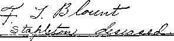
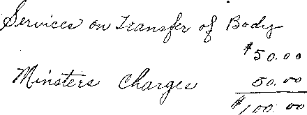

NEV'
BEGINNING
EARTH’S GREATEST
CONFLICT NEAR
BLESSINGS (?) OF CATHOLICISM
GREAT SIGNS AND WONDERS
PUBLIC PRESS
AGAINST PEOPLE
BIBLE STUDENTS
MEET IN NEW YORK
Vol. VIII Bi-Weekly No. 187 November 17, 1926 sr—.
OLD VORLD DYING
a Journal of fact hope anA courage
Wfc= , ,. . -;<w
The New York Convention of Bible Students ....... 99
Public Press Against the People ...
Earth’s Greatest Conflict Near . . •
Reason for Approaching Conflict ...
Message of Hope..................
Pope Steals Bible Students Tnnra .......... it,3
Harold the Rib Tickler ..............
Happenings in the Religious Wcri.-' ...
Those Innocent Sisters .......
Mexican Boycott Peters Out................
Real Estate Boom in Jerusalem........
The Blessings of Catholicism .........
Jezebel Gets Another Shove............
George Stephens Hits the Ditch . .
Charges Made By Evangelist Called False ......... 112
Waiting on the Great Physician . , .......... 113
High Prices of Prayers in Florida
True Account of a Friendly Tilt
The Great Pyramid of Cheops .......
Demonistic Evangelism ....................
“Why Abe Ye the Last to Bring the King Back?”
Little Studies for Little I’eopie .
Studies in “The Harp of God”.........*
Published every other Wednesday at 18 Concord Street, Brooklyn, N. Y., U. S. A. by WOODWORTH, HUDG1NGS & MARTIN
Copartners and Proprietors * Address; 18 Concord Street. Brooklyn, N. Y., U.S.A, CLAYTON J. WOODWORTH . . . Editor ROBERT J. MARTIN . Business Manager
WM. F. HUDGINGS . . Sec’y and Treas.
Five Cents a Copy—$1.00 a Year Make Remittances to THE GOLDEN AGE Notice to Subscribers: We do not, as a rule, send a card of acknowledgment for a renewal or for a new subscription. A renewal blank (carrying notice of expiration) will be sent with the journal one month before the subscription expires. Change of address, when requested, may be expected to appear on address label within one month.
Foreign Offices : British.....34 Craven Terrace. Lancaster Gate, London W. 2
Canadian ......... 38-40 Irwin Avenue, Toronto, Ontario
Australasian ....... 495 Collins Street, Melbourne, Australia •
South African ...... 6 Lelie Street, Cape Town, South Africa
Entered as second-class matter at Brooklyn, N. under the Act of March 3, 1879
Volume VIII Brooklyn, N.Y., Wednesday, November 17, 1926 Number 187
IN THE sweet spirit shown, and in the enthusiasm for the King’s business, it is doubtful if in the history of the International Bible Students Association any convention has ever been held which surpassed the one held in New York City, from Thursday to Monday inclusive, October 14th to 18th, 1926.
The meetings on Thursday, Friday and Monday were held in Mecca Temple, a place of good acoustics, good accommodations and desirable every way for the purpose. Attendances on those days averaged around 1,500, with 2,700 out on one of these occasions to hear Judge Rutherford. The largest attendance of Bible Students was on Sunday, when perhaps 3,000 were in attendance. At the immersion service on Monday thirty were immersed.
The chairman of the convention was R. J. Martin, with E. J. Coward as assistant. The
speakers were C. A. Wise, George S. Kendall, E. J. Coward, A. H. Macmillan, T. J. Sullivan, R. J. Martin, W. F. Salter, F. W. Franz, R. H. Barber, V. F. Schmidt, W. E. Van Amburgh, C. J. Woodworth, and judge J. F. Rutherford, President of the Association. .
At four o’clock Friday afternoon the chairman sprang a surprise which caused the ears of every one that heard it to tingle, and caused a tingling all over New York in addition. It seems that ten of the leading newspapers in New York had agreed to run advertisements announcing Judge Rutherford’s great lecture to be held in Madison Square Garden on Sunday afternoon, October 17th; but at the last minute several of these newspapers went back on their word. Among these were the New York Times and The Sun.
The chairman stated that at 2:30 o’clock that
iiniiiHuiiiiiiiiniiMmnmiHiiiHtwuiiiiiKiiiitiititnii
Here is the evidence that The New York Times and The Sun are against the people and wish to keep them from knowing, the truth. These papers contracted with the International Bible Students Association press agency to carry advertisement of JUDGE RUTHERFORD’S NEW MADISON SQUARE GARDEN mass meeting Sunday afternoon, October l?th. One of these papers on bended knees begged for the business. At the last moment both papers repudiated their contracts and refused to publish the advertisements. Why? many are asking.
The reason seems apparent. They wish to keep the American people in the dark. It is generally understood that The New York Times is controlled by British capital. The Sun is decidedly pro-British.
In May 1 delivered a speech at Royal Albert Hall, London, telling the people concerning the world powers and particularly the true status of the British Empire. The preachers and profiteers did not like it. The common people heard it gladly. Recently more than a million copies of that speech have been placed | in the hands of the peoples of New York City. At the | New Madison Square Garden Sunday afternoon I ex- | pect to tell Americans some great truths that they 1 should know. The New York Times and The Sun I are against the American people. Their interests are better served by keeping the people in ignorance of certain truths.
At 3 o’clock next Sunday afternoon at the New ; Madison Square Garden, 50th street and 8th Avenue, the peoples of New York City will hear a plain statement of the truth, and then judge for themselves whether or not the above-mentioned metropolitan dailies are justified in repudiating their agreements.
’ J. F. RUTHERFORD.
MMrM>MlUlll.lllHllllirilHUI»llllHI»UlUUIIl.............................................................. ■ ............................................... Him I..... ....... ,i I. .....
Dodger Distributed by International Bible Students to the People of New York City
morning Judge Rutherford had called him and inquired if he could get out one million dodgers, lilce the one reproduced herewith, between then and Sunday morning. The chairman, who is also the manager of the I. B. S. A. printing plant, had replied that he could get out six million in that time, if necessary.
The fact of the matter was that at the very moment the chairman was making this announcement, a truck was at the door with a quarter’ of a million of the dodgers all ready. A hurried organization of generals, captains and lieutenants was formed on the spot, and forth marched the little army to give out these annomrcements in key positions all over New York City. A quarter of a million people read the dodgers on their way home from -work that very night.
During the next day another million were printed and given out all over New York. The whole city was reading them and talking about them, so much so that on Saturady night it was almost difficult to find persons to whom to give them. Almost everybody approached wmuld smile and say, I have had three or four already.
One of the chief points of interest is that the people read these dodgers. They folded them up and took them home, seeming to show that they realized that the message was a timely one. It was evidently the Lord’s will that this message should be delivered by His people at this time.
Practically the whole convention went out in this work. Several had expected to be arrested, but to their surprise they found the police and the people friendly and interested. Only two distributors got into temporary difficulty, through mistaken zeal in not moving on when admonished to do so by those whose duty it was to see that they did not impede traffic. *
All were wondering how the distribution of the handbills would effect the service work which had been set for Saturday the 16th, but were gratified to find that the effect was almost wholly favorable. New York is generally considered a hard territory for agents of any kind, and especially book agents; yet on Saturday, with perhaps 1,500 workers in the field, there were sold 2,532 bound books of all sorts (principally Deliverance) and 27,566 booklets, or a total of 30,098 copies—an average of approximately 20 copies for each worker. One brother alone sold 230 booklets oii 115 'calls.
All the foregoing were actual sales, not to the Bible Students but to the public, from door to door. All books not actually sold were taken back at the book stand and money refunded. This total of 30,098 books and booklets actually sold to the public is probably a record. Certainly the individual average per worker is unusually high.
udge Rutherford’s lecture in the New Madison Square Garden was, of course, the central feature of the convention. The new Garden is an ideal place for a great public meeting. It is so designed that 20,000 persons can watch all that takes place on the platform without leaving their seats. By means of amplifiers every word spoken is heard everywhere.
When Sunday morning dawned it was raining hard. This continued until noon; then it cleared, as the Bible Students were sure it would, and the attendance in the afternoon was all that could reasonably be expected. The tw’o upper balconies, which together seat 9,500 persons, had a small sprinkling of people in them; but the balance of the house was well filled with a crowd estimated as high as 12,000. The Bible Students had the best seats. (Love is the perfect expression of unselfishness.) They were the only ones to leave while the lecture was being delivered.
Several who attended the London I. B. S. A. Convention expressed the opinion that in his address Sunday afternoon Judge Rutherford surpassed his great London effort. The audience listened with rapt attention, punctuated with frequent bursts of applause. We reproduce the address in full, as it appeared in Monday’s New York American.
As the great audience poured out, 2,065 bought Deliverance books from the ushers, while 6,760 booklets were sold; bringing the total sales of books and booklets for the convention to 38,923. The sales at the public meeting, 8,825 books and booklets, to the approximately 9,000 strangers present, is a record unequalled before in the sale of literature at a public meeting. This was accomplished by a carefully planned and carefully executed scheme of organization which gave every willing vrorker a part. It is estimated that 1,700 had part in the work at the Garden. Altogether the convention was a great success, and a blessing to all participants.
Earth’s Greatest Conflict Near
Judge Rutherford’s Address at Madison Square Garden, New York
FROM time immemorial the greatest desire of the people has been that they might have a government of equal and exact justice for all and that they might dwell in peace, enjoy prosperity, life and happiness in a state of happiness. The efforts of. the people to accomplish their desired purpose have been opposed at every stage by a subtle and common enemy.
For ages and generations the whole creation has groaned and travailed in pain, waiting for the Deliverer and for deliverance. Because of the entrenched enemy and his powerful organization the desire of the people cannot be accomplished except through great tribulation. The crisis is at hand! Earth’s greatest conflict is a certainty, and it shall be followed by complete deliverance of the people from their oppressors; and then the desire of all honest hearts will be gratified. The facts bearing upon this great question are more thrilling than any book of fiction ever written. They are of vital interest to every one of you. I came here today to tell them to you. I hope the knowledge thereof shall result in good to you and to the glory of God.
INETEEN hundred years ago Jesus of Nazareth was on the earth. For three and one-half years He taught the people, and during that time He spake as never man had spoken. Grace was poured upon His lips, and He told the people how they would have relief from sickness and sorrow, from oppression and death. The burden of His speech was the kingdom of God. He told them that relief would come through God’s kingdom and that this would come in God’s due time. Long centuries before that time the prophets of God had told of the coming of the kingdom, and that such would bring a desirable government for mankind.
After the death and resurrection of Jesus devout and studious men began to learn why He came to earth, why He died and was raised from the dead, and what is the meaning of God’s kingdom. They have also learned why there has been so much opposition to the kingdom of God, and why its coming has been so long deferred.
Now the time is here for that kingdom, and a testimony concerning it must be given to the people. For a certainty the evil forces that have always opposed God and righteousness will put fortth the most stupendous efforts at this time to prevent the establishment of the kingdom of righteousness, and this will bring on the greatest conflict ever known. This, too, is a part of the wonderful story which now must be told to you.
THE prophet declared: “The earth is the Lord’s, and the fulness thereof.” (Psalm 24:1) Long centuries ago God began the creation of the earth. Its preparation was attended with much fire and great, convulsions of the elements. In due course He laid deep down the coal beds and oil fields. Then He brought forth vegetation, and after that the animal creation. These efforts covered centuries.
Why had God created the earth and prepared it? The answer is, He created the earth to be the home of man; and then in due time He created man to be king of the earth. God’s record shows that when He laid the foundations of the earth as the future home of man “the morning stars sang together, and all the sons of God [on the spirit plane], shouted for joy.” (Job 38: 7) It is apparent that God greatly loved man since He would expend so much energy in the creation and preparation of his home, and then bestow upon him the blessings thereof.
God never intended that the earth should be destroyed. “The earth abideth for ever.” (Ecclesiastes 1:4) “I have made the earth, and created man upon it : I, even my hands, have stretched the heavens, and all their host have I commanded. . . . For thus saith the Lord that created the heavens; God himself that formed the earth and made it; he hath established it, he created it not in vain, he formed it to be inhabited: I am the Lord; and there is none else.”—Isaiah 45:12,18.
OD intended that man should enjoy upon earth a perfect government, and that perpetually—conditioned only upon the complete obedience of man to Jehovah. He who would be obedient to the great Creator would of necessity reverence and worship Him, and continue thus in faithfulness.
The spirit creatures of heaven were created long before the creation of man. Man having had no experience, God placed in Eden His son Lucifer, as man’s aid and overlord. Lucifer, ambitious to receive the worship of man, reasoned that he could get this only by alienating man’s love from God. He succeeded in so doing, causing man to violate God’s law, which resulted in his being sentenced to death and expelled from his home of . paradise.
The judgment of death was also entered against Lucifer, but the execution thereof has been deferred until God’s due time. The name of Lucifer was then and there changed to Dragon, Serpent, Devil and Satan, each of these names signifying the course of action the evil one would continue to take.
As Serpent stands for deceiver, this evil one has ever deceived man; as Devil symbolizes slanderer, he has slandered God and all who have tried to do right; as Dragon is synonymous with devourer, the Devil has tried to devour all those who have served God; and as Satan means opposer, the Devil has opposed every effort of man to- establish a righteous government, and has turned man against God. Jehovah has not prevented him from
so doing; but, knowing that man could learn the needed lessons only by experience, He has permitted Satan to pursue his nefarious course until God’s due time to cause it to cease. ■
OWN through the ages a few men have seen and understood that mankind, the descendants of Adam,
have all been born in sin and shapen in iniquity, and because of their imperfections have been easily influenced and overreached by the Devil, and that for this reason the efforts of man to establish a desirable government have failed. These faithful men of old turned to Jehovah; and to these and all other faithful men God has given His precious promises to establish a government of righteousness; and these promises He is certain to carry out. .
To Abraham God promised, “In thy seed all the families of the earth shall be blessed.” (Genesis 12:3) To. Jacob He made the promise of the coming Messiah, and that unto Him should the gathering of the people be, and through Him the people should be blessed. (Genesis 49:10) To Moses He made a promise that God would raise up a mighty One, of whom Moses was a type; and that the people, turning to this mighty One to obey and serve Him, should be blessed with a righteous government and life everlasting. —Deuteronomy 18: 15,18.
To Hosea God made the promise that He would redeem man from death and ransom him from the power of the grave, and destroy both death and the grave. (Hosea 13:14) To all the prophets He foretold the coming of the great Messiah, His anointed One, “the seed of promise” through which the kingdom would be established and bring blessings to the human race.
His promise was that upon the. shoulder of this mighty One the government should rest, that His name should be called Wonderful, the Everlasting Father, the Prince of Peace, and that under His reign the people would d well in righteousness. (Isaiah 9 : 6, 7) Each and every one of these promises must and will be carried out. God’s word shall not return unto Him void.—Isaiah 46:10; 55:11.
ESUS told His followers that He must die and be raised from the dead, and ascend on high to provide the great redemption for man from death and the grave; that He would then come again and receive to Himself His faithful followers, and would set up His kingdom and regenerate the human race. Throughout the Gospel Age God caused the gospel of truth to be preached in order that some might hear and believe and become the true followers of Jesus Christ; and being faithful unto death, should thereafter participate with Him in His kingdom.—Revelation 20: 6.
For 1900 years the hope of the Christian has been the second coming of the Lord and the establishment of God’s kingdom. For 4000 years the hope of Orthodox Jews, who believed the Bible, has been and is the coming of the Messiah and the establishment of God’s kingdom, through which the peoples shall be blessed.
The disciples of Jesus were Jews, Necessarily they were familiar with the promises that God had made to the prophets. They sat at Jesus’ feet and learned of Him. They propounded to Him this question: "Master, what shall be the proof of Thy presence and the end of the. world?’ (Matthew 24: 3) They understood, and properly, that the end of the world would mark the beginning of God’s kingdom. World means mankind organized into forms of government under the supervision of an invisible overlord.
When this question was propounded Satan was the god or invisible overlord of the world. Jesus so stated, and afterwards His apostles corroborated Him. Jesus plainly told His disciples' that the long-promised kingdom would not be during the time of the evil world, of which Satan is god, but it would come at the end of the world; and then He proceeded to state to them a condition of facts that, would obtain at the end of the world, which facts would constitute unimpeachable testi- . mony that the time had come for the kingdom to be established.
Some of His words concerning that time are: “O Lord God Almighty, . . . thou hast taken to thee thy great power, and hast reigned. And the nations were angry, and thy wrath is come, . . . and that thou shouldst destroy them which destroy the earth.” (Revelation 11: 17,18) Then He answered: “Nation shall rise against nation, and kingdom against kingdom, and there shall be famines, and pestilences, and earthquakes, in divers places. All these are the beginning of sorrows.”—Mat-thew 24: 7, 8.
The Gentile Times began in the year 606 B. C., at which time God’s chosen people were overthrown, and Satan became the god over the entire world. The Gentile Times were to continue for 2,520 years. Their times necessarily would end in the Fall of 1914. That marked the date of the Lord’s taking His power to reign; and exactly in harmony with the prophecies the World War began. As further proof Jesus declared that the Jews should begin to rebuild Palestine; and this, as you well know, is in course of fulfilment.
He also said: “Upon the earth will be distress of nations, with perplexity; men’s hearts failing them for fear of what they see coming upon the world.” This is now in course of fulfilment amongst all the nations. These evidences were given by Him, and recorded in the Scriptures, and in due time fulfilled, as a warning to the people and as good news to the people that the time has come for the kingdom of God that would bring to them deliverance. .
The war ceased suddenly in 1918. None of the rulers of the warring nations were able to give a reason why. The real reason is recorded in the Scriptures, namely:
There came a cessation of the time of trouble, of holding back the trouble and permitting a period of comparative peace, in order that a testimony might be given to the peoples of earth that the kingdom of heaven is at hand.
In connection with the answer to the question propounded to Him Jesus said: “This gospel of the kingdom shall be preached in all the world, for a witness unto all nations; and then shall the end come.” (Matt. 24:14) This testimony must be given between the time of 1914 and the final end. It must be given by those who are fully devoted to the Lord. If Christians should now fail to give this testimony God would cause the very stones to cry out. The Lord then pointed out that should the rulers and the peoples fail to hear and to heed this message and turn to the Lord, then should follow the greatest conflict between the forces af good and evil that earth has ever known.
q-’HE great issue now before the peoples of earth is: 1 Who is God? Who is earth’s rightful King? The governing factors of the world have made gold and blind force their gods. Jehovah is the only true God, and Jesus Christ is the King of kings and Lord of lords. The time, has come when God has set upon His throne His anointed King, and now He commands the peoples of the earth to hear and obey earth’s rightful Euler. —Psalm 2:6.
Borne once ruled the earth, and claimed to be a Christian world power. The British Empire is today earth’s greatest world power, and claims to be a Christian nation, America claims to be a Christian nation, and likewise do Germany and many of the other nations that engaged in the World War. The ruling factors of each one of these nations are and ever have been three, to wit, commercial, political and religious. By their claim of being Christian, these nations are estopped from denying that the Bible is God’s AVord of Truth. The Bible, therefore, must be the law by which these nations shall be judged. AVhile these nations claim to be Christian, none of them are Christian. •
The governing factors deny Jehovah God as the only true and living God, and refuse to accept Christ Jesus as King of kings and Lord of lords; and this they do after notice has been brought home to them by the physical facts in fulfilment of prophecies, and by the testimony given by the mouths of many witnesses. The AVorld War, famines, earthquakes, revolutions, the return of the Jews to Palestine, distress and perplexity of the nations, and now another tremendous preparation for war, is evidence by which the Lord God has brought notice to all of these so-called Christian nations that the time for the end of Satan’s empire is here and that the time for God’s kingdom has come.
In 1917, and while the World War was at white heat, the leading ministers of the British Empire issued a manifesto to the clergy of the world, which manifesto I now read:
“The following manifesto was recently issued by a number of England’s most noted ministers:
“First—That the present crisis points toward the close of the Times of the Gentiles.
“Second—That the revelation of the Lord may be expected at any moment, when He will be manifested as evidently as to His disciples on the evening of His resurrection.
“Third—That the completed church will be translated to be ‘Forever with the Lord’.
“Fourth—That Israel will be restored to its own land in unbelief, and be afterwards converted by the appearance of Christ on its behalf.
“Fifth—That all human schemes of reconstruction must be subsidiary to the second coming of our Lord, because all nations will be subject to His rule.”
This manifesto was not only published by the daily papers in Britain, but copies were issued and sent to the clergy throughout all Christendom. Thus notice was brought home to the religious element of the nations of earth, and through them to their allies, the ruling powers, that the long-looked-for second coming of Christ is now realized; that the long-promised kingdom of heaven is at hand; and that all the nations must be subservient to the new King.
Notwithstanding that the clergy claimed to be the representatives of God throughout all Christendom, they rejected this testimony given them; and even the men who issued the manifesto have since spoken against the truth concerning God’s kingdom. AVhile posing as the representatives of the Lord they have in truth and in fact been the allies of the governing factors of earth, which the Scriptures declare are controlled by Satan the Devil; therefore these clergy are representatives of Satan and not of Jehovah. .
OD hates hypocrisy and so states in no unmeasured terms. Hypocrisy had its beginning in the early history of man, when Satan induced men to call themselves by the name of the Lord in mockery of Jehovah God. (Genesis 4:26, margin) Hypocrisy in this twentieth century has gone to seed. The denominational systems, and particularly the clergy thereof, call themselves-by the name of the Lord; and yet they repudiate God, deny His plan of salvation, and join hands with the Devil’s scheme to control mankind.
AVhen the AVorld A'/ar had ceased, and representatives of the warring nations met in consultation, it was the clergy who came forth unanimously endorsing the League of Nations and held it forth as the political expression of God’s kingdom on earth. In 1919 the Federal Council of Churches issued this proclamation:
“The time has come to organize the world for truth, right, justice and humanity. To this end, as Christiana, vesrge the establishment of a League of Free Nations at the coming Peace Conference. Such a League is not merely a peace expedient: it is rather the political expression of the kingdom of God on earth. The League of Nations is rooted in the gospel. Like the gospel, its objective is ‘Peace on earth, good will toward men.’ Like the gospel, its appeal is universal.
“The heroic dead will have died in vain unless out of victory shall come a new heaven and a new earth, wherein dwelleth righteousness.—2 Peter 3: 13.
“The church [nominal] can give a spirit of good will, without which no League of Nations can endure.”
It was the clergy of 150,000 churches in America who a few months ago held a drive week to induce congress to pass a resolution putting America into the League of Nations. Were they doing that in the interest of the Messianic kingdom? Judge ye!
Let the people judge for themselves as to whether or not those clergymen have been sincere in their claim to represent the Lord, or whether they preferred to represent the Devil. Go and visit the churches of New York today and look at the titles of the discourses that the clergymen give. Not one of these is in support of the truth that Jehovah is the true and only God, and that Ills kingdom, is the only means for the salvation and blessing of the people.
With honeyed words and sanctimonious faces, and upon the pretext of reforming the world, the clergy of America join hands with a gang of conscienceless profiteers and bootleggers to enact a prohibition law which does not prohibit, but rather has created a great crowd of criminals. The clergy ally themselves with the bootleggers to take away from the laboring man the legitimate use of beer, which God gave to him for food and nourishment ; and many of them at the same time fill their own cellars, while cooperating with the bootleggers to carry on an illegitimate business; and this they do in the name of the Lord.
Everlasting Covenant
THE lave of God never changes. When God brought Noah from the ark He made a covenant with him which He called the everlasting covenant. The law of that covenant announced that human life is sacred, because only God can give life. That law of God declared that no man should take the life of another man except he do so as the duly constituted executor of Jehovah. Again, He stated in the decalogue: “Thou shalt not kill.” Jesus reiterated that law when He was on earth.
The so-called Christian nations, claiming to be followers of Christ Jesus, and particularly the clergy who pose as the authorized teachers of the Word of God, have not only ignored this law but have joined- with their allies in breaking the everlasting covenant. The history of these nations is written in human blood, unrighteously shed. '
The British Empire entered the World War to maintain her supremacy as a world power. There was no excuse for America going into the war, but the commercial power prepared and lubricated the war machin* ery, the politicians started the machinery in motion, and the preachers did the shouting; and the result is that more than 100,000 young men, the flower of American manhood, now sleep in the dust of France.
The clergy told these young men that if they died upon the battlefield they would constitute a part of the vicarious sacrifice of our Lord and would go straight to heaven. Since the war some of these churches have erected memorial windows, containing pictures of scenes in the World War, with soldier and clergymen side by side and the soldier being transported by angels into heaven.
Concerning this hypocritical course of action on the part of the clergy God through His prophet, says: “Yet I had planted thee a noble vine, wholly a right seed: how then art thou turned into a degenerate plant of a strange vine unto me? For though thou wash thee with nitre, and take thee much soap, yet thine iniquity is marked before me, saith the Lord God. . . In thy skirts is found the blood of the souls of the poor innocents; I have not found it by secret search, but upon all these.”—Jeremiah 2:21,22,34. .
And now come forth some of the' prominent ones amongst the clergy and use the public press to relate the unrighteous course of one of their number, wdro they admit has been guilty of grossly wicked conduct and who died a violent death because thereof. In order to bridge over the unrighteousness of one of their number they are willing to defame the name of God and misrepresent His holy Word, and to tell the people that if this unrighteous clergyman, between the time of the barking of the pistol and the striking of the bullet, asked forgiveness, he went straight to heaven ! Thus they make the Lord God and His Word a stench and turn honest people away from Him.
Reason for Approaching Conflict
WHO is responsible for this misrepresentation of Jehovah, His name and His Word? The answer is, Satan, the enemy of God, who rules in the minds of the disobedient ones. He has blinded the minds of men through the words and actions of his various agencies, in order that the people might not know the true God. Honest Christian people within the church denominations are made sick at heart by reason of the hypocrisy practised by their leaders and the principal of their flocks, and in despair they cry unto the Lord. Back from the Word of God comes His ans-wer to them:
“Therefore wait ye upon me, saith the Lord, until the day that I rise up to the prey: for my determination is to gather the nations, that I may assemble the kingdoms, to pour upon them mine indignation, even all my fierce anger; for all the earth shall be devoured with the fire of my jealousy.”—Zephaniah 3:8,
The clergy and the principal of their flock, to wit, the profiteers and professional politicians, are haughty and proud; and they use their power to oppress the people. Thy have hindered the people from hearing and understanding the Word of God; they have transgressed the law of God, and have repeatedly broken His everlast-. ing covenant by causing the shedding of innocent blood. And the day- of accounting approaches.
“The land shall be utterly emptied, and utterly spoiled; for the Lord hath spoken this word. The earth mourneth and fadeth away, the world languisheth and fadeth away, the haughty people of the earth do languish. The earth also is defiled under the inhabitants thereof; because they have transgressed the laws, changed the ordinance., broken the everlasting covenant.”—Isaiah 24: 3-5.
HY would Jehovah God express His wrath in this manner ? I answer, That the people may know that
Jehovah is the true God and that He has setHisKing upon His throne, and that the time has come for the deliverance of man according to His promise. On several former occasions God has expressed His indignation that the people might not forget His name, and that they may know that the only way to life and happiness is by obedience to His righteous laws.
GYPT was the first world power. God showed His love for that people by sending His servant, Joseph, to them, and through him saving that nation from the terrible famine. After Joseph’s death the Egyptians forgot God and oppressed the peoples of the Lord who were domiciled in their land. He heard their cry and sent Moses to tell the governor to let His people go in peace. That haughty ruler replied: “Who is the Lord God that I should obey his voice to let Israel go? I know not the Lord, neither will I let Israel go.”—Exodus 5:2.
Repeated warnings were then given to the Egyptians, which the governing factors heeded not. Then God caused His angel to lead the Israelites to safety, and then swept the Egyptian host away in the flood of the sea. WTry did He do that? The Scriptures answer, That the people might not forget God. It was for their own good and profit. “Nevertheless, he saved them for his name’s sake, that he might make his mighty power to be known.”—Psalm 106: 8.
HE next world power was Assyria. The Assyrian army conquered the world. Then Sennacherib appeared before the walls of Jerusalem and arrogantly boasted of his power and his gods, mocked the Almighty God, defied Him, and demanded the surrender of the Jewish people.
The Lord God pulled the curtains of night about the walls of the holy city, and it- lay wrapped in darkness. No one would dare go outside of the walls of the city that night. In the morning, with the first grey streaks of light coming over the eastern horizon, the watchmen on the walls and in the towers were straining their eyes, expecting with the coming of day to see the enemy in battle array moving against the city. But, to their great amazement and surprise, as they looked they saw no one stirring. There seemed to be no life in the camp of the enemy.
With the light of day fully come, the sentinels discovered what had transpired. While the Israelites had waited breathlessly for the assault of the enemy, the Lord had stretched out His right hand against the enemy, and now there lay prone in the dust the lifeless bodies of 185,000 of Sennacherib’s bravest warriors. -—2 Kings 19 : 35-37.
ABYLON, the next world power, met a similar fate when her rulers defied Almighty God and turned the people away from Him.
ISRAEL was God’s chosen people, and His first commandment to them was: “Thou shalt have no other gods before me.” (Exodus 20:3) This commandment was not given for a selfish reason, but because' God knew that the safety of Israel from the wicked influence of Satan depended upon their recognizing Jehovah as the only true God. The Israelites fell under the influence of Satan, turned away from Jehovah and rejected Him and His anointed One; and for that reason the great punishment fell upon them. They have suffered now for many centuries, but God has promised in His own due time to fully restore them to His favor.
WHAT happened unto Israel, and which was recorded, was permitted as an example to those who claim to be Christians. Concerning their wrong-doing and what befell them the Lord’s Word says: “Now all these things happened unto them for ensamples; and they are written for our admonition, upon whom the ends of the -world are come.”—1 Corinthians 10: 11.
If Egypt and Assyria and Babylon were severely pun- -ished because they forgot God, turned the people away from Him, and induced them to worship the Devil; if Israel, with some light, turned away from Jehovah and submitted to the Devil; and these all received severe punishment; what should we expect concerning the Christian nations, so-called, who hypocritically pose as the representatives' of God and yet blasphemously deny Him and His Word and reject His King, and accept the makeshift of the Devil, to wit, the League of Nations, as a substitute for the kingdom of righteousness?
Had the clergy heeded the proof that the Lord gave, them, and through them to their allies, in 1914 and thereafter; had they then told the people the truth and the people had heeded, the great conflict now threatening and impending would not need to come. Concerning this the Lord says: "For both .prophet and priest are profane; yea, in my house have I found their wickedness, saith the Lord. ... I have not sent these preachers, yet they ran: I have not spoken to them, yet they prophesied. But if they had stood in my counsel, and had caused my people to hear my words, then they should have turned them from their evil way, and from the evil of their doings.”—Jeremiah 23:11,21,22.
LL nations are now feverishly preparing for war.
Each nation vies with the other to produce the wickedest instruments of destruction. Hatred and malice have gone to seed, and the Devil and his representatives are inciting all against the Lord and against His anointed. Appropriate to this hour are the words of Jehovah, spoken through His prophet:
“Wherefore have nations consented together or-should peoples keep muttering an empty thing? The kings of the earth take their stand, and grave men have sat in conclave together, against Jehovah, and against his Anointed One, saying: ‘Let us tear apart their bands, and cast away from us their cords!’ One enthroned in the heavens will laugh, my Sovereign Lord will mock at them: Then will he speak to them in his anger, and in his wrath will dismay them:—‘Yet I have installed my king on Zion, my holy mountain, let him tell my decree!’ Jehovah said to me: ‘My Son art thou, I today have begotten thee: Ask of me, and let me give—nations for thine inheritance, and as thy possession, the end of the earth: Thou shalt shepherd them with a sceptre of iron, as a potter’s vessel shalt thou dash them in pieces? ” ,—Psalm 2:1-9, Rotherham.
As a further warning to the governing factors, that they might repent and change their course, the Lord further says to them: “Now therefore, ye kings, show your prudence, be admonished, ye judges of earth: Serve ye Jehovah with reverence, and exult with trembling. Kiss the Son, lest he be angry, and ye perish on the way; for soon might be kindled his anger. How happy are all who take refuge in him!”—Psalm 2: 10-12, Rotherham.
But the rulers will not heed. God foreknew that they would reject Him and His King, and that the clergy, posing as His representatives, would be chiefly responsible therefor. Looking down to this day, He said concerning them and their allies:
“Take the wine cup of this fury at my hand, and cause all the nations, to whom I send thee, to drink it. And they shall drink, and be moved, and be mad, because of the sword that I will send among them. ... A noise shall come even to the ends of the earth, for the Lord hath a controversy with the nations; he will plead with all flesh; he will give them that are wicked to the sword, saith the Lord. Thus saith the Lord of hosts, Behold, evil shall go forth from nation to nation, and a great whirlwind shall be raised up from the coasts of the earth. And the slain of the Lord shall be at that day from one end of the earth even unto the other end of the earth; they shall not be lamented, neither gathered, nor buried; they shall be dung upon the ground. Howl, ye shepherds, and cry; and wallow yourselves in the ashes, ye principal of the flock, for the days of your slaughter and of your dispersions are accomplished ; and ye shall fall like a pleasant vessel. And the shepherds shall have no way to flee, nor the principal of the flock to escape. A voice of the cry of the shepherds, and an howling of the principal of the flock, shall be heard, for the Lord hath spoiled their pasture.”—Jeremiah 25:15, 31-36.
WHY should T say that the day of earth’s greatest conflict is near? Because prophecies fulfilled and tile physical facts show conclusively that it is near. The World War and attending conditions from 1914 to 1918 prove the end of the world and the beginning of God’s kingdom. That marked the day when Jehovah set His King upon the throne. (Psalm 2: 6) The war suddenly stopped in 1918 in order that the people might hear the testimony and learn the good news of the kingdom, according to God’s command. This witness has been given during the past eight years.
Concerning the kings of the earth engaged in a World War, and concerning that time, Jehovah said: “And in the days of these kings shall the God of heaven set up a kingdom, which shall never be destroyed; and the kingdom shall not be left to other people, but it shall break in pieces and consume all these kingdoms, and it shall stand for ever.”—Daniel 2:44.
Then again, through the same prophet, He said: “At that time shall Michael stand up, the great prince which standeth for the children of thy people; and there shall be a time of trouble, such as never was since there was a nation even to that same time; and at that time thy people shall be delivered, every one that shall be found written in the book.”—Daniel 12:1,
Jesus declared that after the giving of the witness the final end would be marked by a time of tribulation upon earth as has never before been known, and that it would be the last. (Matthew 24:21,22) All the nations are preparing for the conflict, all expect it to come, but that which they are not expecting is the part that Jehovah shall take in it in which He will smite the nations. There shall be such a demonstration of His mighty power that the peoples of earth will learn that He is God, because this is the day of His vengeance and the time for His redeemed.—Isaiah 63: 4,
OD never does anything by stealth or secret, but gives fair warning. He served notice just preceding the great deluge, by causing Noah to tell the people what lie intended to do. He served notice upon Egypt, by sending Joseph and then Moses to tell of Himself and what He purposed to do. He served notice upon Assyria by sending Jonah to them, to preach to them the truth before smiting them with His mighty hand. He served notice upon Babylon and upon Persia, by sending Daniel the prophet to them. He served notice upon the Jews, by sending them Jeremiah.
He has served notice upon the rulers and kings of the earth today, as well as the people, that the world has ended and that He has set His King upon His throne; and Tie commands the'nations and peoples to heed and hear and obey Him.
There is no other reason or excuse for the International Bible Students' Association to now exist except to serve as witnesses for Jehovah and to testify to the people concerning what is impending and about to fall, and to comfort those who have a sincere desire for comfort, by telling them of the blessings that shall follow. Fifty million copies of a resolution to this effect, in various languages, have been freely distributed during the past two months to the rulers and peoples of the earth. But they will not heed. The clergy will not aid them. The conflict shall follow.—Psalm 82: 5-7.
I HAVE told you of the trouble that is coming. Now let me tell you of the blessings that shall result to mankind, following the trouble. A good father punishes his disobedient child, not because he loyes to do so, but for the child’s good. Jehovah (God) has punished, and will punish again, the world, that the people might learn to their good that He is the only source of life and happiness for them. .
With the storm of destruction gone, the Sun of Righteousness, in all His glory and beauty, shall be revealed for the blessing of the people. About this the prophet says: “Then are they glad because they be quiet; so he bringeth them unto their desired haven.”—Psalm 107: 30.
Jehovah is a God of love. He is unselfish toward all. His prophet declares: “The Lord shall smite the world and heal it.” (Isaiah 19: 22-25) So great is His love for erring man that He sent His dearly beloved Son to earth to redeem man. (John 3:16) When Jesus was born the angels sang: “Glory to God in the highest, peace on earth, good will toward men. Behold, we bring you good news of great joy which shall be unto all people.” That was a prophecy uttered by the messengers of God, and the day has come for the beginning of its fulfilment.
Christ Jesus is the Messiah long ago promised, and
unto Him shall the gathering of the people be. Upon his shoulder shall rest the new government, and of the peace of that government there shall be no end. (Isaiah 9 : 6, 7) Under His righteous reign wars shall cease, and never again shall the people fear such a thing.—Micah 4: 1-4. ‘ '
Now the wicked rich men use the law to enable them to commit wrong, and then use the law to escape, punishment for wrong doing. The poor people have no such opportunity. Under the righteous reign of the Messiah ail shall stand equal before the law, and He shall judge the poor righteously. (Isaiah 11:4,6) He shall reign in righteousness and His princes shall rule in justice. '—Isaiah 32:1. ■
MAN’S greatest desire is life eternally in happiness.
Satan’s first lie was, “There is no death.” The purpose of that lie was to turn the mind of man away from Jehovah God, and to keep man in ignorance of God’s wonderful provision for giving man life. Satan and his agencies have used every possible means to keep mankind in ignorance of God’s truth. It is written in His Word, “This is life eternal, to know thee, the only true God, and Jesus Christ, whom Thou hast sent.”—John 17: 3.
The true Christians only will have life in heaven. The masses of humankind will have life on the earth. God made the earth for man and He made man for the earth, and it is written that blessed are the meek and obedient, for they shall inherit the earth. (Matthew 5:5) The peoples have been blinded to the truth by Satan’s representatives teaching false doctrines. The great Messiah, God’s executive Officer, will remove that blindness that the people may know the truth. (Isaiah 25:7) Then all shall come to know the Lord, from the least to the greatest.—Jeremiah 31: 34. ..
In the great time of trouble just ahead millions of people will die; but that trouble shall be followed by a resurrection of the dead, both the just and the unjust. (John 5:29; Acts 24:15) And then those brought forth from the tomb who obey the Lord and keep His sayings shall never die.
The same rule applies to those who are living. (John 8:51; 11:26) There are millions of people now on earth, many of whom are hearing the truth, and who will pass through the great time of trouble and shall live and not die. “Blessed is he that considereth the.poor; the Lord will deliver him in time of trouble. The Lord will preserve him and keep him alive, and he shall be blessed upon the earth, and thou wilt not deliver him unto the will of his enemies.”—Psalm 41: 1, 2.
Because we stand at the critical time of the cessation of hostilities, when the witness of the Lord is to be given, in that wonderful time when the King has begun His reign, it can now be confidently stated that there are millions now living who will never die!
Even men who have been wicked and who repent »nd turn to righteousness shall then live and not die; as it is written: “When a righteous man turneth away from his righteousness, and committeth iniquity, and dieth in them; for his iniquity that he hath done shall he die. A-gain, when the wicked man turneth away from his wickedness that he hath committed, and doeth that which is lawful and right, he shall save his soul alive. Because he considereth, and turneth away from all his transgressions that he hath committed, he shall surely live, he shall not die.”—Ezekiel 18: 26-28.
The promise of God is that under the righteous reign of His King the people shall be healed, and there shall be no more blind, no halt, no lame; and nothing shall hurt or injure in all that holy kingdom. That will mean that there will be no profiteers, no faithless politicians, and no fraudulent religious leaders and teachers to deceive the people. The light of truth shall shine into the minds and hearts of the people, and they shall turn unto the Lord with songs of gladness upon their hearts and upon their lips.
God through Christ will fully establish the new heavens and new earth, and therein shall righteousness dwell for ever. (2 Peter 3:13; Revelation 21:1-4) Heaven means the invisible ruling power, while earth refers to the organized peoples of the earth. Then the civic affairs of the world will be directed by the Lord of righteousness, and the people will be citizens of His righteous and just government.
Then the Lord will cure the people of their sickness and bring to them health; and no more shall any of the inhabitants say: “I am sick.” (Jeremiah 33:6; Isaiah 33: 24) The Lord God will destroy death by lifting the people up out of degradation unto life and happiness, and then there shall be no more death.—Revelation 21: 4; 1 Corinthians 15: 25, 26.
God is bringing the final conflict to destroy Satan’s wicked organization, that His righteous government may be fully and completely established and that the people may therein enjoy their heart’s sincere desire, namely, life, liberty, peace, prosperity and happiness.
HY does not the metropolitan press give wide publication to these great truths in which all mankind is interested ? They say it is not news. If the time has come for the establishment of a universal government of righteousness, in which all the people will have an equal and fair show, and in which they will be offered life, liberty and happiness, is not that news, and good news, too ? It is the good news of great joy about which the angels sang, and now the people must know it. God has set His King upon His throne. He bids all the nations and peoples of earth to hear and obey Him, that He may extend His blessings to them.
I do not expect the public press to give free publication . to the truth concerning God’s kingdom, because the public press is controlled by the other king, the ruler of the evil world, who is the enemy of God and His righteous government. But the Lord will make known His message of truth. Upon the earth there are now a few consecrated Christians whose very lives are devoted to Jehovah, and who count not their lives dear unto themselves. They are not working for money, nor for members, nor for the plaudits of men. To them Jehovah says: ‘Ye are my witnesses that I am God. Go and tell the good news of my kingdom to all the nations of earth as a witness, and then the final end shall come.’ It is the duty of true Christians now, as the Lord’s representatives, to serve notice upon the people and upon the rulers, including the public press, that God’s kingdom is here; and having done this they have performed their duty.
Pope Steals Bible Students’ Thunder
MOST of our readers know that the Bible
Students conceive it as their greatest duty and privilege to declare that Christ has returned to earth and that His kingdom has come and has begun to function. It was with some surprise, then, that they read that the pope proposed that the last Sunday in October of each year be set apart hereafter as “The Feast of the Kingdom of Christ”, with the avowed purpose “to recall to everybody’s mind each year that Christ is King of all the peoples of the world”.
Protestants generally, who fight shy of most suggestions emanating from Rome, are favoring this suggestion, which seems to. be, on its surface, the very thing for which Bible Students are contending, but which in fact is as different as Stygian darkness is from the bright light of the noonday sun.
The pope’s idea is that the present hodgepodge of dirty politics, crooked commercialism and dirty and crooked ecclesiasticism combined constitutes the reign of Christ on earth. Bible Students know that such is not the case, but that those things which the pope and his Protestant friends revere are in very deed and in very truth the kingdom of Satan, now falling into ruins, tottering first this way and then that way, . clutching at this and at that, only waiting for the final shove which will send it into its thousand year sleep in the great abyss, oblivion, “the bottomless pit”.
THE London Sunday Express of September 12th. contained fifty-one inches of free advertising in the form of an attack on Judge Rutherford for calling forcible attention to the fact that Britain is a part of Satan’s Empire, and at this time in fact the most important part of it. The British Bible Students must have been busy of late • for the' article admits that “within the past two or three days there have been inserted in six million letter boxes” the London resolution -or “Testimony”.
To be sure the Express calls the resolution, which was adopted by a rising vote of 10, 000 of the most intelligent Britishers in the world, “Anti-British abuse,” a “tirade of nonsense,” “a bitter , unbalanced attack on the British Empire,” “virulent outpourings,” and “an amazing farrago of nonsense”; and backs up its own opinion by quotations from two London reverends, one of whom simply says “nonsense” and the other declares that he is “amazed that the I. B. S. A. should permit such fantastic statements to be broadcast in this wholesale fashion”, and also that he is “unaware that the British Empire has ever claimed to rule by divine right; it rules by divine permission”.
All right! All right! The British Empire rules by divine permission. And so does the Devil, the “god of this world”, as the apostle calls him (2 Corinthians 4:4); or “prince of this world”, as the Lord Jesus calls him. (John 14: 30) That is what the trouble is all about. The Devil has lost his job, and the British Empire is about to lose its job, too. The Devil and the Empire are all wrapped up in each other. They are so much alike and act so much alike that when the heathen Chinese think of how opium was forced upon them by that same Empire they involuntarily refer to the agents of that Empire as devils.
The best part of the Express article is six inches of carefully selected quotations from the London resolution, which are calculated to make anybody that reads them sit up and take notice. This, has gone all over the world, wherever the great London Sunday Express circulates; and so the dear old Lunnon Express has rendered areal service to the cause of the truth even if it did not mean to do so. The Express goes to some apparently unnecessary trouble to describe Judge Rutherford in detail, even to the particulars of his dress, seemingly rather out of place in a journal of its supposed dignity and influence. But great men in public life care nothing for either the praise or the censure of newspapers.
Harold the Rib Tickler By 'Harold W. Klein
THE constant perusal of your wonderfully balanced journal makes me love my fellow man more, which to my mind is the highest result any publication could hope to attain. Here is the same idea in rhyme. I presume you have some poets among your many readers.
I really love the human race, Although in each I find a trace ■ Of faded charm.
While Adam real perfection had, His love for Eve put him in bad; He fell for her.
And so because he disobeyed, The fact upon us all is laid;
We’re not so good.
But while we haven’t much to boast, We all can join in on this toast: “The gang’s all here.”
So let’s all help our fellow man In every little way we can,
Toward happiness.
Let’s never knock, although we think
The other guy’s a real bad gink;
We might be wreng.
Our minds are warped, but try to.bend
Them, and to all become a friend;®
Let’s all be pals.
To learn to love the human race,
Your journal holds an honored place;
I wish you well.
[Not to be contrary, but as a sort of antidote for publishing the above, we are giving our readers this time a number made up exclusively of items having a religious tendency. How would you like an oceasioarf number of this kind?—Ed.]
co
Happenings in the Religious World
(Radiocast from Watchtower WBBR on a
Those Innocent Sisters
FOUR nuns were picked off the train at St.
Albans, Vermont, on the way from Montreal to Boston. One of them had a piece of fine lace protruding below her gown. When the customs officers got through with the four ladies they had found over five thousand dollars worth of finest Breton lace sewed into their petticoats, including baby clothes, doilies, priests’ garments and table linens. The nuns all claimed that they did not know how the laces and baby clothes found their way into their petticoats; a Providence father paid $4, 000 duty on the laces and baby clothes, and the nuns were allowed to continue their journey with their laces and baby clothes.
Huge Altar at Philadelphia
Cardinal Dougherty’s altar for celebrating pontifical mass at the Municipal Stadium at Philadelphia had the extraordinary height of sixty feet. These figures, six times ten or ten times six, are of real interest to persons who have familiarity with the Bible and its symbolisms. Nebuchadnezzar’s statue on the plain of Dura was sixty cubits high. The significance is the same. It was announced at the time that sixty thousand persons would parade in front of the altar. Again we have the symbolism, but multiplied a thousand fold—six times ten thousand, or ten thousand times six.
Mexican Boycott Peters Out
THE Roman Catholic boycott against the
Mexican government has failed to accomplish what was hoped for it by the church authorities. The Mexico City correspondent of the New York Times states that the poorer classes, who have been observing the boycott, realize that it is not effective, and that shortly it will be a thing- of the past. The Mexican Chamber of Deputies has officially announced that there will be no modification of the religious regulations.
THE Manufacturers’ Record quotes President Calles, the Roman Catholic President of Mexico, as saying:
If the Roman Catholic clergy could end the existence of other religions they would do it. For them there is no other religion than the Catholic. The great defect of the Catholic religion is the doctrine of the infallibility of no
wave length of 416.4 meters by the Editor.]
the Church—that the Church cannot be mistaken. This doctrine prevents people from thinking, and deceives them with all classes of lies.
Another Statement by President Calles
TN THE Chicago Daily News President Calles is quoted as saying:
In the United States there are no serious religious troubles, but in our country the foreign priests, and especially the Catholic priests, have caused calamity. All the outcasts of Rome and Europe have been sent to our country. Thousands of them came to make our people fanatics, to sink them in ignorance and to take away with them all they can get hold of. They have come to mix in our internal politics, to absorb our economic strength, to control all of our activities, to disrupt our institutions, to counteract all the beneficent results of advantages obtained at a terrible cost. In the presence of this situation we have been obliged to take action to check the evil.
The Blessings of Clerical Government
THE Lithuanian people recently ran a clerical government out and put another one in because they knew the priests who had been running things were so crooked that they could not lie straight in bed. It turns out that the people were right. The clerical ex-minister of finance while he was minister drew a salary of only $500 a year, and he was a poor man when he went into office; but he is now retired in a palace in Switzerland, with a fortune estimated at several millions.
THE New York Times tells us that there is a real estate boom on in Jerusalem. A twelvestory office building is being erected. Shops, factories and dwelling houses are being built by the hundred. The population has increased to 65, 000 and is growing rapidly. Cisterns that were never cleaned have been overhauled. Mosquitoes have been banished by oiling stagnant pools.
Palestine Has Bumper Orange Crop
UNDER this heading The New Palestine of September 3rd said:
Palestine orange growers will enjoy a year of prosperity, it was learned today as the figures on the orange crop are being. compiled, says a Jewish telegraphic agency from Jerusalem. Two million boxes of oranges have already been packed. Eighteen thousand persons worked in the gathering of the crop.
WRITING of the blessings which Catholicism has conferred upon the people of Mexico, Mr. C. J. Kearney, Special Staff Correspondent of The Fellowship Forum, writes:
Perhaps nowhere in all the world has' the Romanist Church ever found a more fertile field. Superstition thrived. Religious'processions were daily events. Church bells' rang from morning to night to celebrate some evangelic ceremony.
Millions of dollars poured into the coffers of the clergy. Much of this ill-gotten wealth went to Rome and .the remainder was spent lavishly by the clerics in maintaining elaborate homes and concubines. Thousands of churches, monasteries and convents were erected, the interiors of which, were garishly decorated with images of gold and silver studded with precious stones and pearls. As an idea ' of the. extent to which this practice was carried on all over Mexico it may be well to say here that in the Cathedral of Guadeloupe, where the Virgin is supposed to have appeared to a rum-soaked Indian there is one altar rail containing 250 tons of solid silver.
Let me repeat that again—250 tons of solid silver— while the statue of the Virgin on the altar has had donated to it over $2,000,000 worth of jewelry. Yet hardly a day passes that some poor peon is not found on the front steps of this edifice—dead of starvation. On one occasion I saw ten dead in front of this very house of God and all from the same cause—hunger.
The same publication contains the following interesting editorial:
Roman Catholicism claims that its priests are superior to Christ and have power to command Christ, and that He must obey. Note the following, from the Catechism of Perseverance, Volume IV, Page 288:
'•'What language of man can tell the dignity of the priesthood, and the greatness of the priest ?
“Adam was great as the established king of the universe. . . . Moses was great, who,' by a word, divided the waters of the sea. . . . Joshua was great, who said to the sun, 'Suh, stand still/ and the sun. stayed, obeyed the voice of a mortal. Kings of the earth are great, who command vast armies and make the earth tremble at the sound of their name. Ah, well! there is one man greater , still. He is a man, who, every day, when he pleases, opens the gates of heaven, and, addressing himself to the Son of the Eternal, to the monarch of the worlds, says to him: 'Descend from your throne. Come!’ Obedient to the voice of this man-^-the Word of God, He by whom all things were made, instantly descends from the seat of His glory, and incarnates Himself in the hands of this man, more powerful than kings, the angels, than the august Mary. And this man says to Him, ‘Thou art my Son, this day have I begotten thee. Thou art my victim !’ And Jesus lets Himself to be immolated by this man, placed where he wills, given to whom he chooses. This man is the priest. . . . The priest is as powerful as God.”
CUBA has always been solidly Roman Catholic; which means there, as it does everywhere, that the church has done its best to control everything. The Cubans have thus had a fine opportunity to see what benefits, if any, accrue from Jezebel’s influence in their affairs. Some of them seem to be getting a little restless, if we may judge from the front page cartoon of El Anticlerical, a Havana monthly, reproduced herewith.
El Clericalismo cumpliendo su mision
The cartoon shows the clergy trying to prevent truth from getting out of its coffin. The top caption tells us that “as long as the Catholic Church exists, ignorance prevails.” The bottom one is “Clericalism fulfilling its mission”. The word “Verdad”, on the coffin, means Truth. El Anticlerical is in its first year; up to July it had issued nine numbers. The paper has eight pages twelve by twenty inches in size.
George Stephens Hits the Ditch
"If the blind lead the blind, both shall fall into the ditch"—Matthew 15:14.
A FEW months ago the George Stephens evangelist troupe was putting on a show at Orlando, Florida; and at sundry and divers times, in the effort to make a hit with the populace and then get out of town with as many shekels as possible, at least one member of the outfit not only forgot to tell the truth but apparently drew upon the Brooklyn Eagle and other sources of misinformation for the usual batch of lies about Pastor Russell, which has been for years its principal stock in trade.
Now it also seems that in the city of Orlando there is at least one honest newspaper man, Bill Glen by name, publisher of the Orlando Morning Sentinel; and with that rare courage not often seen in this day of professional hypocrites arid wind-jammers he gave the Bible Students a chance to say something on the other side of the questions at issue.
The Bible Students printed an advertisement and a statement, both of which are good to read, and are reproduced herewith for the delectation of our readers. We hope that these efforts to give Mr. Stephens some elementary lessons in righteousness will bear some fruit.
Meantime we are wondering just how this parson appreciated turning turtle and hitting the ditch when he was going smoothly down hill, hitting on all four cylinders and making sixty miles an hour toward his coveted clean-up. Maybe the next time he will not try to coast so fast without first picking out a nice place to land. The advertisement and its accompanying statement follow:
Read The Two Articles On This Page Off The Sentinel. .
Some Facts In Connection.
(1) Evangelist Stephens makes false statements.
(2) Was he fair and honest in his statement about Pastor Russell?
(3) When brought to task, being unable to prove his charges, he remains quiet.
(4) Should hatred issue from the heart of a minister under pretense that he did it in love?
(5) Is it essential to the Christian faith to believe in “eternal torment” as claimed by Stephens? Ninety percent of the criminals believe this blasphemous doctrine.
(6) Those who believe this theory of the dark ages—would not they, under certain con, ditions and circumstances favorable to themselves, burn their opponents at the stake should they have sufficient power?
(7) History records the fact that John Calvin, founder of the Presbyterian church, was instrumental in having a man by the name of Servetus burned at the stake, because he (Servetus) could not agree with the eternal torment theory. The hands of the clergy go up in horror today because Bible Students are showing that the Bible does not teach this blasphemous doctrine.
International Bible Students Asso. Oblando, Florida.
Charges Made by Evangelist Called False
Local Organization of Bible Students Criticizes Stephens for Statements About Pastor Russell
(Reprinted from Orlando (Fla.) Sentinel)
DECLARING that the charges against the late Pastor Russell, made by Evangelist George Stephens, are untrue, and stating that they were sorry that Mr. Stephens had “stooped to the low ebb of slandering”, a statement was issued last night by Russell’s followers, calling for the evangelist to answer questions they asked.
Mr. Stephens, when notified over the telephone last night that the statement had been made, replied that he did not care to make any statement. 'T knew what I was saying, and did not talk hastily,” he said.
Following is the statement:
We, the local branch of Bible Students, are sorry that an emergency should arise in a Christian land and in the City of Orlando, from the midst of a so-called assembly of Christian people, wherein one who claims to carry the Banner of Christ, one Evangelist George Stephens, should stoop to the low ebb of slandering and besmirching the name of a dead man who has no opportunity to defend himself. It is needless to mention verbatim all the false and scurrilous charges such as his wife’s divorce, familiarity with other women and alleged separations caused between man and wife by him.
Did Mr. Stephens know personally or did he even know by firsthand information that these are facts? If not, then we ask, Would the seat of justice in Orlande or any other court of this great country permit evidence
that is merely hearsay ? Any lawyer knows that no such evidence would convict a man of petty larceny in any court.
Four members of the local organization of Bible Students not only knew Pastor Russell, but were associated with him as close friends and co-laborers knew his domestic life, his social and religious activities for twenty years, and are- ready to go on oath before any court and take such oath that these charges are absolutely false.
The able lawyer who was the private counsel for Pastor Russell in all his affairs can supply the court records to prove that the law never granted Mrs. Russell a .divorce, and that not one of the charges against the character of the late pastor was ever proven in court. Anyone honest enough to desire the truth of these matters may have the same by addressing a card to 1014 East Washington Street, this city. ’
Does the evangelist not know that the abuse of a dead man is not the act of a gentleman ? It is the height of ill manners and, last but not least, it is a criminal offense against the law of God. (1) Mosaic Law. (Exodus 20: 16) “Thou shall not bear false witness against thy neighbor.” Will some one please teach Mr. Stephens his first lessons in the Oracle of God ?
(2) “Speak evil of no man.” (Titus 3:2) “Speak not evil one of another.” (James 4:11) “Lord, who shall abide in thy tabernacle? who shall dwell in thy holy hill ? He that walketh uprightly, and worketh righteousness, and speaketh the truth in his heart. He that backbiteth not with his tongue, nor doeth evil to his neighbor, nor taketh up a reproach against his neighbor.” —Psalm 15:1-4.
These three witnesses agree that the evangelist is a transgressor; the same old story, “Physician, heal thyself.” We need a meeting to convert the preacher; and before we conclude we would like to call attention to Psalm 50:16,17: ‘What hast thou to do, to take my words in thy mouth ? seeing thou hatest instruction and casteth my words behind thee ?’ Also see Proverb 1: 7.
The evangelist tells his hearers that he did it in love. How strange that this blind guide does not know that love “thinketh no evil” (1 Corinthians 13:5), much less speaks evil 1
In conclusion let us say: The Savior of the world was vilified and died a convict. The apostles and prophets were hounded and hunted like beasts of the forest. The reformers did not escape the fire brand of the dark ages; and the class in all history who led the attacks against them were the religious leaders.
All who desire the truth of these matters will find the latch string out and find us at home, continuing to serve the Master, and glad to suffer a little reproach for His sake. “All that will live godly in Christ Jesus shall suffer persecution.”—2 Timothy 3:12.
Another Bible Student had this to say:
The Lord never ordained men to pass the hat and charge for salvation, and then slander the name of honest folks who tell the truths of the Bible. The largest percent of modern evangelists are in business simply because business is good. Stop the flow of money and you will soon see how sincere their hearts are for the love of teaching the gospel.
I now issue an open challenge to any evangelist or any minister or any priest any time in any city, in any nation on the face of the earth, to prove that the Bible Students have ever taken up a single collection or asked for money from anyone anywhere. This alone is proof that the Bible can be taught free, and that salvation need not be bought and paid for with worldly goods or material things—and indeed it cannot be.
When the ministers and evangelists turn from their iniquities and herald Christ’s message for the pure love of being a disciple, and work from their hearts, then the people will learn righteousness and not before. But the dollar is their god; and they commit blasphemy by their man-made doctrines and concocted schemes, drives, etc., to keep the flock in ignorance. Is it any wonder that America and the world is in such an evil condition and that wickedness prevails?
Waiting on the Great Physician By Wm. F. Budgings
FOR the information of readers of The Golden Age who frequently write me personally concerning the Abrams method of diagnosis and treatment, and about the electronic home treatment machine known as the RDK (“Radio Disease Killer”), I wish to explain that I have severed my relationship with The RDK Corporation of America and also with the Brooklyn Electronic Institute, in order to be entirely un
incumbered in my service for our Lord and King. _
I am as interested as ever in the relief of sufferers, of course; and I feel that I am best serving that end by devoting myself unreservedly to the spreading of the Kingdom message. I rejoice to know that the Great Physician will, ere long, take care of all human ills in a perfect and lasting manner.
High Prices of Prayers in Florida By F. W. Jordan
THE accompanying invoice will no doubt be -*• of interest to readers of The Golden Age, particularly the second item of $50, which is the “Minsters” charge for a three minute prayer offered to God (?) at the grave of the “deseased”. But notwithstanding the poor spelling the figures, which are the important part of the bill, speak for themselves.
The husband of Mrs. John Stapleton, of Tampa, Fla., died recently, and an elder of the International Bible Students congregation there gladly delivered the funeral sermon, making no charge, of course, for his services. Bible Students consider it a privilege, to serve the Lord and humanity as Jesus and the apostles did—without money and without price.
Mr. Stapleton’s body was then removed to Leesburg, Fla., for burial. There is no Bible Students• class in Leesburg; and Mrs. Stapleton’s son, who is not a Bible Student, proceeded to call on a local minister of one of the Protestant churches there to deliver a brief prayer at the graveside.
The preacher, of course, came and did his “bit”, which consumed but a few moments;
and then they received this bill in the mail:
STATEMENT '
L. C. Page Funeral Home
** MORTICIANS
DAV PHONE 127 NIGHT PHONE IBD
Leesburg. Florida
Iw account With
If The Golden Age did nothing more than simply expose these mercenary hypocrites who blasphemously pose as ministers and representatives of the Lord, this magazine would be rendering to humanity a great service. Thank God these pious thieves will not be able to fleece the people much longer!
True Account of a Friendly Tilt
IN A small town in Illinois the other day, a retired farmer met the pastor and remarked the unusually fine morning. Replied the minister, “Yes, people do not properly appreciate the Lord’s gifts and goodness.”
“That is very true,” said the farmer; “many people think that now the heavenly Father is kind and loving, but that after a while He will get very angry, and stay angry to all eternity. The very reverse is true. Now He is ‘angry with the wicked every day5; but after a while, ‘His wrath will be turned away.’ ”
“You do not believe such rot as that, do you?” said the minister.
“Why do you call it rot?” said the farmer. “That is what the good Book says; I merely quoted it.” And sheepishly the pastor replied, “Well, I suppose I should not call it rot. Good morning!” z
THE New York Evening World, setting forth some recent views of a British writer upon the teachings of the Great Pyramid, introduced the subject with the following, which will be of interest to many of our readers:
The idea that the Great Pyramid of Cheops is not a mere huge tomb but a chart in stone outlining by a system of uncanny mathematical dimensions the history of the human race' is not new. The late Pastor Russell advanced the idea and calculated from the number of
S
inches in the passageways and corridors when the present dispensation would come to an end and when the great events of history would take place.
It cannot be denied that by his peculiar method of reckoning he arrived at the year 1914 as the date for a great catastrophe. The contention of the experts is that the ancients had such a profound psychic insight Into the future that they wanted’ to warn the human race as to what was in store for it during the ages, and so they fix 1928 as the year of the greatest holocaust of all history.
and Wonders
me (who has since been converted, sanctified, baptized in the Holy Spirit, speaking in the new tongue), when I saw (my eyes shut) a bright circular disk of light, like a large oval frame of a picture. I turned my head to my right to see it (eyes shut), and I saw the form of two soldiers standing as it were in consultation as to their next move. They were clad in armor like Roman soldiers seen in pictures. I saw their helmets, tunics reaching to their knees, their shields and swords. I never felt a greater awe in my soul, for I was sure it was a vision of heavenly warriors, and I realized as never before that there is a ceaseless warfare going on in the supernatural realm between good and bad spirits.
We explain this as another clever appeal to the gentleman’s vanity, benevolence and combativeness. As to the bright light which he saw, we refer our readers to Studies in the Scriptures, Volume VII, pages 127, 162. The second vision, narrated above, occurred a week after the first one. After an interval of two years came the following, in a Christian Alliance prayer meeting:
I was touched, and when he (one offering prayer) ceased, I said: “I want to thank the Lord for the blessing I have received. It came to me from the Vine, through you brethren, the branches, to me, a twig.” Instantly I fell to the floor as if struck by lightning. I had seen prostrations, and feared them. If I had received the slightest intimation that I would be prostrated that day, I think it most probable that I would not have been present. But we forget that “my thoughts are not your thoughts, nor your ways my ways, saith the Lord”. (Isaiah 55: 8) I was unconscious while falling; but as soon as I struck the floor I became fully conscious, and knew what had happened to me. Instantly the blackness of night rushed over me and I was sure it came from Satan, who wanted to rush me info fleshly, fanatical acts. Powerless as to bodily strength, I had full and clear mental activity, and I cried: “Jesus, I give myself to Thee, for this hour: take care of me and shield me from the attacks of Satan.” Mighty power fell upon me: I had fallen on my right side: I was whirled, rolled onto my left side, then again to my right side, while the spirit of intercessory prayer swept my soul for them I loved and who were unconverted.
We explain this as an undue glorifying of other brethren as branches and an undue belittling of himself as a twig, attached to a branch, and not to the Vine itself. When the Lord said, “I am the Vine: ye are the branches” (John 15: 5) He did not say, T am the Vine; some of you are branches, and the rest of you are twigs.’ The
IN MATTHEW 24:24 the Lord told His disciples that in the last days there would appear “great signs and wonders: insomuch, that, if it were possible, they shall deceive the very elect”.
While engaged in Christian work from door to door the editor recently came in contact with an elderly gentleman of refined appearance, for many years the superintendent of public schools in one of the largest cities of Pennsylvania, and now one of the leading workers in the Pentecostal movement—an offshoot of the Christian Alliance founded some years ago by Rev. A. B. Simpson. The gentleman in question, thorough^ ly saturated with a belief iii eternal torture, was unwilling to have anything to do with Bible Students’ literature, which he regarded as heretical. Then he pressed some printed matter on the editor, which gave, in part, some of his own experiences descriptive of some of the “signs and wonders” mentioned in the above text.
There is no question about this man’s intelligence, nor about his honesty. He does not know that he is being deceived. He honestly believes that he owes these strange happenings to the Holy Spirit. He would be horrified at the thought that they are from demons. And yet that is our firm conviction. In his book of experiences, written five years ago, which - he admits that he published with reticence because he knew it would not be generally accepted, the gentleman says: '
That day, October 10th, 1907, after 11 a. m., there was revealed to me a broad, beautiful band of light streaming down to me from God, who was at one end, and I at the other end. It was whiter than snow. God was White. and Holy, and I was white and holy, for He had imparted His holiness to me, and I had no sin.
We explain this as a very clever appeal to the gentleman’s vanity; and, in all kindness, we are forced to the conclusion that he overlooked two important scriptures, one of which says, “There shall no man see me and live” (Exodus 33: 20); and the other reads, “If we say that we have no sin, we deceive ourselves, and the truth is not in us.”—1 John 1: 8.
We continue to quote:
Same night, in a hotel, after retiring, I lay, thinking and longing for the conversion of one near and dear to
personal application of Isaiah 55: 8 belittles the wide sweep of one of the grandest passages of the Bible.
A week later:
Returning home I retired to get a good sleep, so I could arise early and attend the early morning prayer meeting. But there was not much sleep for me. After falling asleep on my back, limbs flexed, I felt a touch as soft as velvet on my right knee, and I heard a voice which named me and added, “Lead us in prayer.” Much surprised I arose and prayed. Asleep again I awoke suddenly and saw a bolt of fire like lightening fall from heaven which was broken in the middle, and the words of Jesus came at once to my mind: “I beheld Satan fall as lightning from heaven.”—Luke 10:18.
This was another clever appeal to the gentleman's vanity. As to the loss of sleep, see Scripture Studies, Volume VII, page 127. At the prayer meeting the next morning the experience was continued as follows:
I saw in a vision a low valley, the Valley of Humiliation, which Jesus went into and I had not, and I cried, “Lord, put us down, down!” I meant into the Valley of Humiliation; and I fell on the floor. My spirit was caught up as in a trance into the heavenlies. I saw and heard nothing, but my spirit was bathed in sweetness and quietness, serenity and peace. When my spirit returned, in about an hour, this world seemed altogether, strange.
This bathing in sweetness, quietness, serenity and peace, is one of the stock tricks of the demons to keep their hold on those who get under their influence. The account continues:
This manifestation so alarmed one of the helpers that she speedily left the hall. Another, who had done missionary work, and who had spoken in the “new tongue” but had relapsed and lost the utterance, was instantly restored in spirit, and spoke the new tongue again.
After six years the gentleman got this power to speak with new tongues himself, and has had it ever since. He narrates the gircumstances:
I had suffered much pain from muscular rheumatism which produced an irritability of nerves that made it hard for me to be patient. I had flung myself into an impetuous torrent of prayer to be delivered from this plague. I overheard the leader, an aged man, say: “We will lay hands on him, for it is Scriptural.” When he laid his hands on my head I saw a streak of lightning come straight to me; and in a second I was, not prostrated, but HURLED from four to six feet distant from where I knelt, on the floor. In speaking of this afterwards, that leader testified that he felt the power come on his head, which flowed down his right arm, and struck me. I was filled with the Spirit, and was rolled and tossed from side to side while I was praising God in a most joyful manner.
After quite a while, after the cloud of glory had swept by, I tried to rise, but could not yet. At length I sat on 'a chair, with my elbows resting on my knees, laughing with heavenly joy, when in a moment I lost every particle of physical strength and fell to the floor; and the power of the Holy Ghost was great. I was whirled on to my right side, all the time praising God, when all at once my lips and tongue got so thick that I could not say, “Praise the Lord,” and I spake in “the new tongue”. I was not expecting it, and I was never more astonished; and I remember my thought: “Oh, has THIS come to me!”
And now, regardless of any and all scoffers, I narrate my experience. I heard the most charming, heavenly music, a whole choir; and it seemed as they sang they danced. The music was so rhythmical and sweet that I could hear their footfalls as they swept around in that heavenly dance, wholly unlike anything earthly. Ko tongue can describe the ecstacy of my soul. When at length I arose, and arrived at home, after I retired, lying wide awake, wondering, I had a vision of a procession of angels who marched from my right hand past me: each one looked at me, nodded and smiled as only heavenly beings can smile, and I knew they were sent to rejoice with me. ■
It is our thought that the demons took unfair advantage of the gentleman’s weakened nervous system, and that they passed him out a little more bait, after their custom. His rheumatism was not healed at thft time, nor afterwards; for he mentions it again. Both times when he prayed for it’ to be healed, the result of his prayers was .volubility in speaking the “new tongue”. His attention was called to evidence that some who have had this power have used language too vile for reproduction; and that others who even took the gift to the mission fields, found they had been woefully deceived. He admitted that he knew of these occurrences, and yet the delusion upon him is so strong that he still thinks this gift is from the Lord, even while making the following admissions (capitals are purs):
I was taken entirely away from myself, swept along by the irresistible heavenly current, so that I spoke with vehemence for nearly an hour, until my tongue was weary, parched and dry. A brother drew near me, speaking (also) in the unknown tongue. I spoke to him, and we . talked back and forth with great vigor: neither of us
HAVING THE GIFT OF INTERPRETATION. -
From that day to this, June 30th, 1921, I speak at will; and it is easier to pray and sing in the new tongue than with my native tongue. I stayed away from certain meetings, for i could not pray without speaking the NEW LANGUAGE.
FpHE editor of The Arbitrator reports attend-A ing a seance in which, although the medium’s hands were tied with picture wire, her head secured with a strap, and her husband’s hands were held, nevertheless objects 'were identified in the dark, phosphorescent articles were lifted four feet from the floor, and a bell was rung while held in the hand of the skeptic, though it was not connected by any wires whatsoever.
With cleverly constructed apparatus many tricks simulating the above may be performed, but it is our understanding that the true explanation of many such phenomena is that demons, devils, have the power to expel from the human body of persons who give themselves over to their control, streams of living cells; and’with, these cells, out of the medium’s body, somehow attached to one another like rubber in a rubber band, the demons perform feats which have attracted such general attention and which cannot otherwise be explained.
These devils or demons have the power to take out of a human body about one-half of all the cells in that body, but cannot go beyond that' without causing the death of the medium. These cells may be exuded from the medium’s mouth, finger tips, toes or other parts of the body suitable to the devil’s or demon’s purpose at the time. The cells thus exuded are called ectoplasm. The appearance of a medium with ectoplasm exuding is so revolting that only one medium, so far as known, has consented to make the exhibition in the light. This is one reason why seances are held in the dark.
Demonistic Evangelism By Mrs. J. Levens
I ENCLOSE clipping regarding the fourteen-year-old girl who is said to have “voices and visions” and “whose revival campaigns have stirred New York”. You will note that it says of this child that “she preaches in a voice that fills tabernacles” and that “she has brought whole congregations to their feet and flung them on their knees in the aisles”.
All this reminds me of an interesting conversation held with a young bride last winter. The young woman had been an evangelist and could also stir an audience and bring them to their feet. I asked her some Bible question and showed her the Studies in the Scriptures. In a very impressive way she said:
I have been a Christian, but I do not know where I stand today. I have lost faith in the Bible. I was trained for Christian work in the Moody training school. I did alum work and went into the prisons to visit the prisoners. I told those with whom I went that I was not fitted for the work, but was urged to go forward and went on with the others. I saw what they did and did the same. I could direct people to the Savior. I could preach. I never studied the Scriptures, or knew what my text would be until I stepped on the platform and opened the Bible. Then the text would come. I explained it, as others said, so as to be understood by them. I did not understand it myself. It seemed to me my brain was revolving in some mysterious way, and the words came out freely and fluently. I told my friends about this and wished to decline further services; but they said, “You keep on; you are doing just fine.” Finally, however, I decided I could not go any further under such conditions. I could no longer be used by a power of which I did not know the nature.
[This honest woman who, for the time, fell under the influence of demonism in one of its most seductive forms, did just right in refusing to be used any longer by these occult powers. In due time she will be rewarded for her stand for honesty, righteousness and truth. She will get the truth, the greatest of all possible blessings one may have in this sin-burdened world. —Ed.]
Demonism in India By G. H. Livingston (Burma')
I AM a subscriber, and reader of The Golden
Age, and as I have just seen a very popular and interesting personage this afternoon I thought I would report the matter for the benefit of all your readers. His name is Ko Htun Kyaing. He is Burmese and is only six years of age. His father’s name is Mg. Ba Maung. They live at Mengai ■ (Village), Rantanos P. 0., Maubiu District, Burma, India.
Little Ko Htun Kyaing is making lectures here daily at the various pagodas on the Buddist scriptures, in which he is apparently well versed. He speaks several languages. The Burmans think he is superhuman and are flocking by the thousands to see him.
They say that this child did not speak a word until he was three years of age. Then he ran away from his home and went to Rangoon to the pagodas and began to speak in several tongues.
My family and I talked with this boy for a few minutes today, but the crowd was too great to stay long. He converses intelligently, but with the voice of a child. He is about the size of the average six-year-old boy; but his head is larger, and he also has a keener eye than does an ordinary child. How do you account for such prodigies?
fWe account for this prodigy by the almost certain fact that demons have obsessed the child and are using his brain and voice mechanically for their own purposes.—Ed.]
PERHAPS some of your readers are not familiar with the Talmud, but would like to become acquainted with that collection of absurdities and ancient human traditions. I have recently read H. Polano’s selections translated from the original Talmud. The following notes are from these selections: '
[Page 5] The rest of heaven and the smile of God was Moses’ for evermore [at his death].
[Page 17] Lamech killed Cain and Tubal Cain. (Genesis 4:23) The tragedy was on this wise: Lamech was blind but was still fond of hunting, so he asked Tubal Cain to take him to the hunting field. Seeing a deer near at hand Tubal Cain directed Lamech where to shoot his arrow. Tubal Cain investigated the results and told Lamech that he had killed Cain. Lamech became grief-stricken, and while clapping his hands in sorrow Tubal Cain’s head got in the way and got crushed by blind Lamech’s powerful sorrow.
> ■ .
[Page 18] Enoch was the second person to rule over the human race; and some one said to him: “Ascend, Enoch, ascend to heaven and rule over the children of God in heaven as thou hast reigned over the children of men on earth.”
[Page 21] Enoch ascended to heaven in a whirlwind, with a chariot arid horses of fire.
[Page 27] Nimrod was king over all the earth. He became a mighty hunter, because he wore the coat which
By James 8. Watson (Hawaii)
Adam received from God. He was the first to be crowned.
[Page 58] Esau shot Nimrod through the heart and stripped him of the wonderful coat which God had made for Adam. •
[Page 134] Moses had the same walking-stick which Adam carried out of Eden.
The Talmud also teaches the immortality of the soul. No doubt the Savior was acquainted with the writings of the Talmud, and that may be the reason why He said, “In vain do they worship me, teaching for doctrines the commandments of men.”—Matthew 15: 9.
We can readily see how utterly impossible it is for believers in human immortality to have any love in their hearts for the Savior, who told them that they had no life of any kind. (John 6:53) It is true that many believers in immortality are moral and sincere people; but we also should remember that morality and sincerity are more prevalent among the Japanese and Chinese than among Christendom’s offspring. Yet it gets them nowhere but to the grave.
Not until the Jewish people believe Moses will they be in a position or condition of heart to accept the One whom Moses spoke of and who will restore all things. And Christendom is as hopeless and helpless as Jewry, because it too gives more heed to the creeds of men than to the Word of Truth.
“Why Are Ye the Last to Bring the King Back?”
■ 2 Samuel 19:11 .
[Radiocast from WATCH TOWER W B B R on a wave length of 416.4 meters by F. W. Franz.]
THESE were the classic words of David, once the king of the Jews. There were twelve tribes to the Jewish nation, and the words were addressed to the tribe of Judah. Absalom, David’s handsome son, had stolen the hearts of the twelve tribes and had stirred up a rebellion against his father, God’s anointed king. David fled to the wilderness for safety. The troops that remained loyal engaged Absalom’s forces in battle. Absalom was defeated. He died the tragic death of being accidently hanged by his long hair from an oak tree, where David’s general, Joab, found him and thrust him through the heart with darts.
The twelve tribes were now disconcerted. Their rebel king was dead, their rightful king was in hiding, waiting to return to the throne. The general sentiment of the people was in favor of bringing back King David; but the tribe of Judah, the king’s own tribe, were slow to appreciate their privilege. Thereupon the king shamed them by sending them his appealing message: “Why are ye the last to bring the king back to his house ?”
Why, you say, should this snatch of ancient history be brought to my attention? Because sacred history repeats itself, and because these historic circumstances find their parallel in modern history; and you, Mr. Listener-in, are personally involved in a most vital sense. This is no appeal to bring back the kings who have lost their thrones since 1914. The kings of earth have had this day. Their lives and regimes, as history records them, show that they are undesirable now and are unable to establish universal prosperity, health, wealth, happiness, peace and unending life.
The great war of 1914 and the unhappy conditions which have followed it are an unmistakable telltale on the sure outcome to which the rule of political kings, money kings and ecclesiastical kings of earth leads. A review of human history plainly shows that no human government up till now has blessed all its subjects with equal justice, with full opportunity for doing good, the right thing, with perfect health, with freedom from poverty and fear of want, with true and unmixed happiness, with freedom from oppression and the invasion of one’s rights and liberties, with immunity against the loss of one’s good things, with peace of heart, body, mind and home, and with life in its fulness; nor has any such government brought the people into relationship with the true God, not even by its state religion or its clergy.
Man is still left vainly hoping for a betterment of conditions on a permanent basis, but past history supplies no guarantees of success by human powers. Meantime the activities of the nations, the significant statements of prominent'men of the world, and the economical and moral developments of the nations, lead all thinking and serious persons to fear for the worst, just as the great Prophet foretold it nineteen hundred years ago, saying: “Upon the earth distress of nations with perplexity, men’s hearts failing them for fear and for looking after those things which are coming on the earth.” Oh no! we do not want earth’s dethroned kings back. But what everyone who professes to be a Christian should want is that God’s will may be done on earth. It will take God’s power alone, exercised through the ones whom He directly puts into power, to establish and enforce the divine will on earth.
“Why are ye the last to bring the king back?” How does this question affect me, do you ask? I answer with another question: Do you pray the prayer, “Thy kingdom come,” and are you true to that prayer? Or are you showing the same spirit that the royal tribe of Judah did toward King David? What do you mean? you ask. I mean this: David means beloved one, and he is a typical picture of God’s beloved One, Jesus Christ, whom God has made “King of kings and Lord of lords”.
If it can be demonstrated that Jehovah God is now establishing His kingdom on earth and is offering His Son to all peoples and nations as earth’s new King, are you in favor of Him and do you hail Him as the true King to whom you will pay your allegiance? Or will you be faithless, indifferent, and deliberately postpone receiving Him (while meantime you continue to favor and serve that which is opposed to God’s anointed King) ? If you pray the Lord’s prayer, then you at least profess to accept this prayer which Jesus taught us. Jesus declared God’s
[Word to be the divine truth. The whole Word of God lines up in harmony with the Lord's prayer, and I am therefore warranted in submitting my entire argument to you on the basis of God’s Word, the Bible. Either this, or to you the prayer, “Thy kingdom come,” is merely an idle, empty, insignificant phrase which your lips repeat by force of habit.
Jehovah is the great King, because He is the Creator of all things. Psalm 95:3 says: “For the Lord [Jehovah] is a great God, and a great King above all gods.” In other scriptures God •speaks of Himself as “The King, whose name is Jehovah of hosts”. St. Paul writes: “Now unto the King eternal, immortal, invisible, the only wise God, be honour and glory for ever and fever.” All creatures of heaven and earth should voluntarily subject themselves to Jehovah, the King over all. Due to His position, Jehovah God is the rightful committee of One to make all appointments to power and authority.
The first king Jehovah appointed over earth was Adam, the first man. Adam was God’s handiwork, a human being of kingly countenance and bearing, endowed with wisdom, love, justice and power and thus reflecting the image and likeness of his Maker. Being the workmanship of God, he was perfect. He was thus well qualified to wield the sceptre of authority. God did not build a palatial residence for him; He planted a paradise in Eden for his home. God presented him with a lovely queen, the perfect woman, Eve. She was blessed with the power to become the mother of perfect children, who were to fill the earth and rule it in conjunction with their first father, Adam, for ever. They were not to rule over one another but over the lower animal creations of earth. .
Amazed at God’s great goodness toward man, David exclaims in the eighth Psalm: “What is man, that thou art mindful of him ? and the son of man, that thou visiteth him? For thou hast made him a little lower than the angels, and hast crowned him with glory and honour. Thou madest him to have dominion.over the works of thy hands: thou hast put all things under his feet: all sheep and oxen, yea, and the beasts of the field; the fowl of the air, and the fish of the sea, and whatsoever passeth through the paths of the sea.”
Adam owed his fuH and everlasting allegiance to Jehovah, his great Creator and Benefactor; but alas, he folio-wed in the course of Satan. The Scriptures bring to view two prominent spirit* ual or heavenly sons of God. The one was Lucifer, -who proved disloyal to God and became Satan, which means God’s adversary. The other Son is the Logos, or Michael, who came down from heaven nineteen hundred years ago and was born as the man Jesus, and who has through all ages proven loyal to Jehovah God. Lucifer become self-centered, was seized with the ambition to be admired and worshiped by man as God. Hence he rebelled against his heavenly Father and became His adversary. Then he led the first man and -woman into forbidden paths and stole away God’s worship from them. Therefore Jehovah changed Lucifer’s name to Satan or Devil.
The eating of the forbidden fruit of the tree of the knowledge of good and evil was a sraaU thing on the surface, but it spelled rebellion against the will of God. The eating of it entailed great and severe consequences, because God had issued a mandate to Adam, saying: “In the day that thou eatest thereof, thou shalt surely die.” God pronounced the sentence of death upon the now disobedient Adam, and took steps toward the execution of that sentence by driving him from his Edenic paradise into the thorn and thistle-laden wilderness outside.
This all occurred before Adam and Eve exercised their privilege to bring children into the world; and this is the reason why you, Mr. Listener-in, are in a dying condition today. As the great Bible philosopher, Paul, explains it in Romans, chapter five: “Through the offence of one many be dead. . . . By one man’s offence death reigned by one. . . . By one man’s disobedience many were made sinners. ... By one man sin entered into the world, and death by sin; and so death passed upon all men, for that all have sinned.”
Adam, coming under the selfish and maHg-nant influence and rule of Satan, lost his real liberty; and his offspring, born thereafter, lost their, freedom in him. Sin, imperfection and Satan have ever since limited man’s Eberty and power to do and to enjoy good. Satan promptly proceeded to set himself up as “the prince of this world”. Thus Jesus calls him. Legions of holy angels in heaven fell under his baneful influence and power. These Satan brought together into an organization, unseen to man but available for the purpose of controlling man’s affairs and keeping him away from God. The Bible symbolically calls this invisible organization of evil heavenly beings "the heavens which are now”, and which are soon to be destroyed in fiery trouble and their evil influence lifted from man.
Satan has also overreached man in his efforts to organize governments. He has brought about the perversion of all that might be good in these governments, so that they are all lined up under his invisible, spiritual or heavenly organization; and the power over the people has become concentrated in the hands of big politics, big business and big church. This explains why there is so much crookedness in political, financial and church institutions, and why in each of these departments of human affairs haughty and selfish men have been elevated to power and position over their fellow men and have aggrandized and enriched themselves while they keep the people under restraints. The Bible speaks of this earthly organization of men into governments under Satan’s lordship as the symbolic earth.
The symbolic earth as well as the symbolic heavens will be destroyed and the elements thereof will be dissolved in the approaching battle of Armageddon, that terrific final conflict between God’s organization and the Devil’s organization. The symbolic heavens and the symbolic earth together make up what the Bible calls “this present evil world”. Thank God its end has been reached and soon its structure is to be completely demolished and removed from the earth, to make way for the full establishment of “the world to come”, the “new heavens and a new earth wherein dwelleth righteousness”.
Jehovah God is not hardened against man. He still loves mankind and has compassion upon them; and for this reason it was that He sent His Son, the Logos, to die that mankind might live happily again on earth for ever. He foreknew how man’s repeated efforts to gain life, peace, prosperity and happiness wouldbe blocked by Satanic interference and by human selfishness and weakness. Lovingly He planned to set up a kingdom on earth and to place a faithful and righteous King upon the throne. To Comfort man with hope of a better time coming He made this kingdom the glowing theme of all the holy pro phets whom He inspired to prophesy. .
Hear the Patriarch Jacob on his deathbed, saying: “The sceptre shall not depart from Judah, nor a lawgiver from between his feet, until Shiloh come, and unto him shall the gathering of the people be.”
Hear the Prophet Balaam blessing the chiL dren of Israel and saying: “Out of Jacob shall come he that shall have dominion and shall de< stroy him that remaineth [of Satan’s organiza< tion] ”■—Numbers 24:19.
Hear the poet-prophet David striking the strings of the harp and singing: “Give the king thy judgments, O God, and thy righteousness unto the king’s son . . . He shall judge the pool of the people, he shall save the children of th< needy, and shall break in pieces the oppressor. . . . In his days shall the righteous flourish; and abundance of peace so long as the moon endureth. He shall have dominion also from sea to sea, and from the river unto the ends of the earth.”
Hear the words of Isaiah foretelling the human birth and the glorious reign of Shiloh, “the Prince of peace," saying: “Unto us a child is born, unto us a son is given, and the government shall be upon his shoulder. ... Of the increase of his government and peace there shall be no end, upon the throne of David.”
Hear also the words of the Prophet Jeremiah which say: “Behold, the days come, saith the Lord, that I will raise unto David a righteous Branch, and a King' shall reign and prosper, and shall execute judgment and justice in the earth.”
Hear the inspired words of Paul, who writes.: “He must reign until he hath put all enemies under his feet. The last enemy that shall be destroyed is death.” And then in the light of all these rosy promises of God, try to catch the significance of Jesus’ words of prayer: “Thy kingdom come.” Who is there so selfish as would not pray the prayer of Jesus for such a kingdom as God’s prophecies declare is coming?
But men, blinded by their selfish interests and shortsightedness, and flattering themselves with boastful claims of brainy-ness and ability to save themselves, do not want the Lord’s kingdom. Even clergymen, Catholic and Protestant, who regularly lead their congregations in praying, “Thy kingdom come,” do not want the Lord’s kingdom. They want the present selfish order in which they are privileged characters, and they say that this constitutes the Lord’s kingdom. You may strenuously object to this assertion, but can you deny that in 1919 the Federation of Churches of America issued a manifesto stating that the League of Nations “is the political expression of God’s kingdom on earth”? As to -the accuracy of that claim you do not have to ask a Bible Student; simply ask some of our American statesmen, such as Senator Borah , and others.
Nor can you deny that clergymen, both Catholic and Protestant, by the thousands subscribed their names in favor of the League of Nations; and last year (1925) they set aside a week for the churches of this country to stir up sentiment in favor of getting the United States to join the League. And who does not know of the clergy’s connection with the Prohibition law in this land ? Yet where is there a movement among these clergymen to break away from politics and to turn to the Lord God’s anointed One and His incoming kingdom, and to lead the people not into a worldly organization of devilish political powers but into the Lord’s true kingdom? Where is their obedience to the God whom they profess to serve and who says: “Know ye not that the friendship of this world is enmity with God? Whosoever therefore will be a friend of the world, is the enemy of God”?—James 4:4.
The facts of human history from 1914 to date —the World War, the famines and droughts, the earthquakes, the pestilences, the social upheavals and revolutions, the return of the Jews to Palestine, and the increasing universal distress the trepidation among both rulers and ruled— prove indisputably that Christ’s prophecy is fulfilled, as well as other Bible prophecies regarding the end of the world and the second and invisible presence of Christ on earth and the establishment of His kingdom.
The Prophet Daniel has announced: “In the days of those kings shall the God of heaven set up a kingdom, .which shall never be destroyed: and the kingdom shall not be left to other people, but it shall break in pieces and consume all these kingdoms, and it shall stand for ever.” Satan’s heavenly and earthly organization is in its last days. God’s anointed King, Christ Jesus, is present. He is indeed unseen to human eyes but is forcibly making His presence felt and is speaking to the rulers and the ruled through the fulfilment of sacred prophecy.
The Lord is sending forth as His witnesses true, humble and faithful Christians who belong to no earthly church or institution but who are students of the Bible, and thus His own prophecy is being fulfilled that “this gospel of the kingdom shall be preached in all the world for a witness unto all nations: and then shall the end come”. Thus the testimony is being given publicly to all, to the high and the lowly. Surely all people of all denominations who profess to be genuine followers of Christ, and especially the clergy who claim to represent the Lord Jesus, ought to be glad and eager to examine the evidence, prove its truthfulness, then tell it out to others and hail the presence of the divine King and the establishment of His kingdom which brings joy which shall be to all right-minded people.
But what about the great professing Christian denominations and their clergymen? Are they the first to sever their connections with their political and financial allies that they might be the friends of God and give their support to the incoming King? Are they the leaders in proclaiming the glad tidings of the approaching overthrow of Satan’s empire and the complete setting up of God’s kingdom, which shall raise the dead to life and shower the blessings of restoration of all things upon the people? Do you remember the text which we quoted in the beginning, and which we have used as the caption of this lecture? And do you mark for yourself how that human nature has asserted itself as in the days of yore? Can you not see that history is repeating itself? -
Mark now how God’s Word foretold that conditions would be as we now see them. When Jesus stood before Pontius Pilate, the Roman governor, and Pilate asked Him: “Art thou a King?” it was the clergy who denied Jesus’ claim and howled for His blood. When Jesus hung on the cross r«)d Pilate had a superscription posted above His head, reading: “This is Jesus the King of the Jews,” it was the clergy of that day who objected and demanded the changing of the sign into one of ridicule; it was they who hypocritically cried: “We have no king but Caesar.”
Jesus, giving a parable on how He would leave this earth and go to His heavenly Father and receive a kingdom and come again, said of those who claimed to be His followers: “But his citizens hated him, and sent a message after him, saying, We will not have this man to reign over us.” Even so, the spiritual head of a great religious organization at Rome prefers to reign himself rather than have Christ Jesus reign; and each pope has regarded himself as, “World Ruler” from the time that Emperor Charlemagne granted the pontiff temporal power by presenting to him the so-called “Papal States” in the year 800 A. D. That title and its accompanying powers and claims the Roman pontiffs have never renounced; and even today, in the face of tremendous world events fulfilling the Bible, there is a greater attempt than ever to gain more temporal and political power for the Vatican. Admission to the League of Nations is sought for this self-styled vicegerent of Christ.
The clergy of the Protestant denominations are likewise busier than ever in political efforts; they hail the League of Nations as a godsend, and claim that they can set up the kingdom of God on earth without the second coming of Christ. Thus we behold them very active in trying to reform and upbuild Satan’s earthly empire, while at the same time they turn their backs on the divine testimony being given today, and reject the heavenly King who is present, saying in effect: “We will not have this One to reign over us.” “We have no king but Caesar.” —
These facts no one can deny. The question is, therefore, What are you, who are listening in, going to do about it? The issue is now being put squarely before all by the Lord. The Bible shows that the battle of Armageddon in its severest phases is approaching; and that Satan is organizing his earthly forces more tightly than ever against God’s incoming kingdom and His Christ, and is seeking to draw all people, even the elect of God themselves, into his organization. There is no middle ground. The time has come for each one to whom the tidings of God’s kingdom comes to take a stand and rally either to God’s standard of truth as it is found in His Word, the Bible, or to ally oneself with some part of Satan’s political, financial, religious and social organization. The situation demands that each one make an individual choice.
The issue is even being put to the political and financial and church rulers and their adherents. Read the second Psalm, where it says: “Be wise, therefore, 0 ye kings; be instructed, ye judges of the earth. Serve the Lord with fear, and rejoice with trembling. Kiss the Son, lest he be angry, and ye perish from the way, when his wrath is kindled but a little.” Wisdom and love for God dictate that the rulers take heed and acknowledge the new King of earth whom God honors with the title, “King of kings and Lord of lords,” and who is therefore above all earthly rulers, religious or otherwise. Let these rulers use their good influence in behalf of spreading amongst the people the knowledge of the establishment of the Messianic kingdom and of the blessings which it has in store for the people.
This is not an appeal to put the Bible into the public schools; that is out of the question and would dp little good. Let the people, inside or outside of the churches, turn away from human leadership and creeds, and turn to the Bible and prayerfully and honestly study the evidence which is now available, to the effect that the time of the old world has ended, that the new world has begun and that God’s kingdom is being ushered in by the invisible Christ; and that Christ Jesus, the divine One, is dashing the nations to pieces, in order to set the people free and to bless them with life, liberty, peace, happiness and reconcilation with God. Let them separate themselves from all earthly organizations and accept the King of kings and vow their allegiance to Him, and then wait upon Him to bind Satan and to bring in the fulness of His kingdom.
This is not a plea to become lawless or anarchistic or to swear allegiance to some foreign potentate or religious ruler. God’s Word does not counsel that. Do not depend upon the clergy to lead you in the right way; their course in all history down to the organization of the League of Nations and even to the present time proves that they are unreliable leaders and that the people can in no sense look to them as safe religious guides. Remember the priests and Pharisees and religionists of Jesus’ day who yelled for His blood, who favored Caesar as king and who desired the murderer and robber Barabbas released and Jesus crucified.
Note what modem religious leaders are saying today from pulpit, in newspaper and over the radio, and judge foryourself which way they are directing the people. “Come out from among them,” plainly cries God’s Word. Let the Bible be your standard of religious truth; study it with the unsectarian helgs that Gkxi has vided for all true Bible students of today and assure yourself thereby that God’s kingdom is at hand with its blessings for all who obey its righteous rule. Bear in mind too that it is a Bible truth that “millions now living will never die”, and prepare yourself for citizenship in Christ’s glorious kingdom on earth, wherein God’s will shall be done on earth as it is done in heaven.
Could there be a King more worthy of your choice and allegiance than the One whom God has anointed and whom He enthroned in 1914 to administer the affairs of earth for the next thousand years? He is the One who left the heavenly glories and suffered ignominy and shame on earth and died at last on the cross for you and for all mankind. He is the One who not only died but who, as St. Paul says, “liveth again, that he might be Lord both of the dead and living”. He is the One whom “God hath highly exalted . . . and given him a name which is above every name that at the name of Jesus every knee should bow, of things in heaven, and things in earth, and things under the earth [our dead loved ones], and every tongue should confess that Jesus Christ is Lord to the glory of God the Father”.
When Satan’s empire is eventually overthrown in the approaching battle of Armageddon, and, to use the language of the Psalm, Christ comes down with His loving blessings like rain upon the mown grasss and as showers that water the earth, then the people will really appreciate the change in earth’s affairs which God’s power hath wrought. Then, as the prophecy of Isaiah, chapter 26, verse 13, declares, the people will say with fervent sincerity: “O Jehovah our God, other lords beside thee have had dominion over us: but by thee only will we make mention of thy name.”
Sidereal Exploit By
One evening as I watched the sun Sink slowly out of sight, The gloom around me thickening as It settled into night, I gazed into the depth of space, The heavens I revere, And felt myself transported there. ’Twas strange, I had no fear; For all about me everywhere Were objects that I love— The sun and planets, moon and stars, And all that is above.
Methought I went to Saturn, Mars, And thence to old Neptune. Returning then 1 rested on The crescent of the moon.
I saw star clusters, nebulae, And streams of comets rare, And all the constellations, from Centaurus to the Bear.
And thus upon the lap of space, I viewed with heart’s delight The many wonders of the sky In mine ethereal flight.
To Pleiades I quickly sailed Across the depth of night, And found that cluster strangely veiled In wisps of nebulous light..
Yet I was not content to race With fires that burned in sight, i ■
C. W. Du Vail
So into voids of endless space I sped with all my might; And ever as I looked beyond This universe aglow, Mine eyes found countless others to Succeed the one we know. Despair at last o’ercame me as L backward looked once more Across the universal sea To one familiar shore;
For all was strange to me out there, Yet voices guided, me.
I listened as one whispered low: “This is infinity.”
Then back I turned and homeward sped. Past suns with kindly light;
Where I had been these radiant orbs. Were fully out of sight.
And whirling past the myriad suns. And systems on my way
Down countless millions starry trails I reached the Milky Way-Back to the universe I know, Back to the skies I love, Back to this dear old earth of ours Surpassing all' above.
And then I felt the morning light Fall softly through the screen;
I oped mine eyes and with surprise I found it all a dream.
Radio Programs ‘
[Station WBBB; Staten Island, New York City.—416.4 meters.]5 '
Sunday, November 28
10: 00 a. m. Watchtower String Quartette.
10:20 Choral Singers. .
10: 30 Bible Lecture—Judge Rutherford.
11: 00 ■ Choral Singers.
11:10 Watchtower String Quartette.
11: 20 Sunday School Lesson, “Gideon and the Three Hundred”—F. W. Franz.
11:40. Choral Singers.
11: 50 Watchtower String Quartette.
2 :00 p. m. Ruskin Macknight, cellist.
2:15 Choral Singers. ,
2:30 Fred Williams, tenor. -
2: 45 Bible Lecture, “Cleansing the Leper”
-—H. H. Riemer.
3 :15 Choral Singers.
3: 30 Ruskin Macknight, cellist.
3: 45 »Bible Instruction—F. S. Barnes.
4:10 Choral Singers.
7: 00 p. m. Watchtower Concert Trio.
7:15 Stanley Gohlinghorst, baritone.
7: 30 Bible Lecture, “Double Drama of the Ages-— The Exodus”—H. H. Riemer.
8:15 Vocal Duets—Fred Williams and Stanley Gohlinghorst.
8:30 Bible Questions and Answers
—Judge Rutherford.
Tuesday, November 30
Musical Bible Drama—“Earth’s Last Funeral Song”, i 7: 30 p. m. Organ Prelude and Prologue
Act I
Scene 1—Paradise of Eden.
(a) Lucifer Betrays his Trust.
(b) The Invasion of Death.
Scene 2—As it was in the Days of Noah.
. (a) Angels and Women,
(b) The Rainbow Pledge.
Act II
Scene 1—The Babe Drawn from the Nile.
Scene 2—Solomon’s Glory and Seduction. ,
Scene 3—Zedekiah’s Overthrow, “Lucifer 1 Becomes God of this World.”
8:15 p. m. INTERMISSION—Music
8 :20 Act III ’
Scene 1—The Holy Night.
The Conrmracy of the Three Magi, Herod and Lucifer.
Scene 2—The Blindness of Bartimaeus vs. Religious Blindness.
Scene 3—The Arch-Traitor of all History, The Crucifixion.
Scene 4—Bribing the Guards of the Sepulchre.
Act IV
- Scene 1—Baiting Christendom with
Religious Pageantry.
Scene 2—Armageddon and the Binding of Satan.
Act V
Scene 1—Paradise Restored.
Scene 2—The Ascent from the Abyss. Defiance and the Lightning Bolt. The Funeral Dirge over Lucifer.
Scene 3—The Joy of Heaven and Earth.
9:15 p. m. Epilogue.
(This Drama will be accompanied by characteristic musical numbers, such as instrumental and vocal solos, quartettes and choruses.) .
Thursday, December 2
|
7: 30 p. |
m. I'. S. Barnes, organist. |
|
7: 45 |
Billie Frederick, tenor. , |
|
8: 00 |
Bible Lecture, “Man’s Everlasting Home—" |
|
Where Will It Be?” —P. H. Harding. ' | |
|
8:30 |
Billie Frederick, tenor. |
|
8:45 |
Ji'. S. Barnes, organist. |
|
9:00 |
Helpful Items on Health and Hygiene. • |
Friday, December 3
7: 30 p. m. Rudolph Clemento, violinist.
7: 45 Fred Twaroschk, tenor.
8: 00 Bible Lecture, “Were the Three Wise Men Servants of God or of the Devil?”— F. H. Dougherty.
8: 30 . Fred Twaroschk, tenor.
8: 45 Rudolph Clemento, violinist.
9:00 “Thanksgiving”—Eldore Bergsbaken.
Sunday, December 5
10: 00 a. m. Watchtower Concert Orchestra.
10: 20 Vocal Selections.
10:30 Bible Lecture—-Judge Rutherford.
11:00 Vocal Selections.
11:10 Sunday School Lesson, “Ruth and Naomi’*
—W. N. Woodworth.
11:30 Vocal Selections.
11: 40 Watchtower Concert Orchestra.
2: 00 p. in. Garment Instrumental Trio.
2:15 Choral Singers.
2: 30 Bible Lecture, “Is Christ again Present on Earth—Why?”—F. W. Franz.
3: 00 Choral Singers.
3:15 Joseph Bonaccorso, violinist.
3: 30 Garment Instrumental Trio.
3:45 Bible Instruction—John De Fehr.
4:10 Choral Singers.
4:20 Garment Instrumental Trio.
7: 00 p. m. Watchtower Violin Choir.
7:15 Fred Twaroschk, tenor.
7: 30 Bible Lecture,.“The Last Stand of the World Rulers”—F. AV. Franz.
8: 00 Fred Twaroschk, tenor.
8:15 Watch tower Violin Choir.
8: 30 Bible Questions and Answers—Judge Rutherford.
Tuesday, December 7
7 : 30 p. m. Professor Charles Rohner, violinist.
7:45 Irene Kleinpeter, soprano. ,
8: 00 Bible Lecture, “The King of Kings has Begun to Reign”—R. S. Emery.
8:30 Irene Kleinpeter, soprano.
8: 45 Professor Charles Rohner, violinist.,
9 : 00 “Listening in”—on Professor Thomas Standwell and Harry Goodwin.
Thursday, December 9
7: 30 p. m. F. S. Barnes, organist.
7 : 45 Frederick Williams, tenor.
8: 00 Bible Lecture, “What is the End of the World?” —It. S. Seklemian. '
8:25 Frederick Williams, tenor.
8:35 Dr. Hans Haag, violinist. .
9: 00 Helpful Items on Health and Hygiene.
Friday, December 10
7: 30 p. m. Watchtower Concert Trio.
7: 45 Minnie Shafer, soprano.
8:00 Bible Lecture, “Joy Cometh in the Morning” ■—T. Ji Sullivan.
8: 30 Camille Schmidt, soprano.
8:45 Joseph Bonaccorso, violinist.
9:00 Bible Lecture, “The Abrahamic Covenant—
Its Significance to Us” — E. L. Beaulieu,
Little Studies for Little People
"Tell ye your children of it, and let your children tell their children, and their children another generation."—Joel 1: 3
Who is God?
1. Whether we live in the country or in a large city, the wonders Of the works of God are all around us. He it is who made the rich brown earth, which caused the little acorn to sprout and nourished it until it became a great tree. The clever little squirrel sporting about in the branches of this tree was also made by Him.
2. God made the great force which we call electricity, that runs our street cars, lights bur lights, and enables us to talk to friends many miles away. And these things are but the beginning of all the wonderful works of His hand.
3. When you look up into the sky on a clear night, keep the thought always before you that every star has its proper place, and none can go astray; for it was Jehovah, our heavenly Father, who made and placed them there.
What is the Bible ?
4. The most precious thing that mankind has in all the world, more valuable than all the gold, silver, or diamonds he could ever mine, is the great book which God has caused to be written, and which is called the Bible.
5. In the Bible, God tells us all about Himself. Every word spoken by God has a deep meaning. He never told us anything useless. We cannot listen to his words with too much respect and attention.
6. When a passage is read from the Bible we should all earnestly try to understand it, and we should always feel free to ask our elders any question that comes into our minds on this subject; for God wishes every one to inquire into His words that all may have knowledge of His great plan.
7. The Bible tells us that "in the begining God created the heavens and the earth”. Jehovah God had no beginning. (Psalm 90:2) He has always existed and will continue to exist for ever and ever.
[End of First Study.]
Questions on First Study
1. Who made the earth upon which we live? We find upon the earth many interesting things which were not made by man. What are some of these things? Who made them? ,
2. Men control certain forces, with which they do wonderful things. What is one of these forces ? What are some of the things men do with this force? Who made the force itself ?
3. On a clear night what do you see in the sky? Did men make them and put them there ? Who did ? Is there any danger of their running into each other or getting out of order? Why?
4. Next to life itself, and next to our Savior and Redeemer, what is God's most precious gift to us ? Which would be better, little wealth with the Bible or all wealth and no Bible ?
5. About whom does the Bible tell us? Is it hard to understand, or easy? Why?
6. When a passage from the Bible is read, should we wish to understand it? Why? If we do not understand it, what should we then do? Does God wish us to understand it?
7. Are there some things we cannot expect to understand? Name one of them. '
The Holy Bible must have been Inspired of God and not of men. I could not, if I would, believe That good men wrote it to deceive. And lad men could not if they would; Nor would not, surely, if they could, Proceed to write a Book so good;
By A. E. Gladding, A. M., Ph. D.
And certainly no crazy man
Could e’er conceive its wondrous plan. Behold, what other kinds of men, Than do these three groups comprehend? Hence it must be that God inspired The words which souls of prophets fired.
As the wind in the trees is sighing^ God hears thee, Israel, when crying,
As thou thy sorrows tell.
And in answer to thy long yearnings, He will soon receive thee, returning
To thy land, 0 Israeli
HWith issue Number 60 we began running Judge Kutlierord’s new book, ITTII “The Harp of God”, with accompanying questions, taking place of both Advanced and Juvenile Bible Studies which have been hitherto published.
564 While the trouble in the earth is ever increasing and the suffering of the poor increases, some are manifesting a greater amount of sympathy and consideration; while others are becoming more unreasonable and harsh toward the poor. The Lord indicates what class He will favor in this time of trouble, saying, “Blessed is he that considered! the poor: the Lord will deliver him in the time of trouble. The Lord will preserve him, and keep him alive; and he shall be blessed upon the earth.” (Psalm 41:1,2) Surely this could apply to none other than those now living in this time of trouble, because when restitution blessings begin the time of trouble will be over. .
565 LTpon the earth there are now, according to the best statistics obtainable, approximately 1,700,600,000 persons who have a measure of life. The proof cited herein shows that the old world (social apd political order) ended and began to pass away in 1914, and that this removal process will be completed in a few years and righteousness fully established. The Scriptural evidence further is that many will be brought through this time of trouble, and these will be the ones with whom the Lord will first begin the work of restoration. ■ -
566 The first world ended with a great flood, in which a few persons, to wit, eight, were saved by being carried over in the ark from the old to the new order of things that God established immediately after the flood under Noah. This was an example or picture representing the passing away of the present evil world and showing that many will be carried oyer from the old to the new. When God had delivered Noah and his family from the perils of the deluge and Noah builded an altar before the Lord and offered a sacrifice, the Lord made promise to Noah, saying, “I will not again curse the ground any more for man’s sake; . . . neither will I again smite any more every thing living, as I have done. While the earth remaineth, seedtime and harvest, and cold and heat, and summer and winter, and day and night shall not cease.” (Genesis 8:21,22) The Scriptures show that “the earth abideth forever”. (Ecclesiastes 1: 4) Therefore this statement to Noah is a positive promise that never again will the earth witness the destruction of every living thing. Seeing, then, that we are at the end of the old order and the opening of the new, and that according to the Scriptures many must pass over to the new, it can be confidently announced that millions Ol'1 PEOPLE NOW LIVING WILL NEVEE DIE, be-eause these being offered restitution blessings the presumption must be indulged that many of them will accept and be obedient to the new order of things.
5®7 It was Jesus who said: “Whosoever liveth and believe th in me shall never die.” (John 11: 26) The people of the world do not yet live, nor have they had an opportunity of life; and this opportunity cannot come to mankind in general until the times of restoration begin. Then the living ones who believe on the Lord shall not die. We should keep in mind, however, that to believe means to act upon that belief, in accordance with it, and to be obedient to the new order that the Lord will establish in the earth. Furthermore Jesus said: “If a man keep my saying, he shall never see death.” (John 8:51) Men cannot keep the sayings of Jesus until they hear them; and the world cannot hear until the Lord’s due time, (1 Timothy 2:5,6) We are now entering that due time-and the message of the kingdom is being given out, by the Lord’s 'grace, that some may hear and, hearing, may profit and live.
QUESTIONS ON “THE HARP OF GOD”
Does the Lord indicate the kind of people that will be carried through the time of trouble? Give Scriptural proof. fl 56 i. ,
How soon may we expect the present evil order to pass away? fl 565.
What catastrophe caused the first world to end? fl 566. What promise did God make to Noah immediately following the flood? Quote the promise, fl566.
What assurance do we gather from this divine promise with reference, to those now living on the earth? fl 566.
Quote Jesus’ words in John 11: 26. fl 567.
When will this opportunity of life come to mankind? Quote the words of Jesus in John 8:51. fl 567.
Is it possible for any one to keep the sayings of Jesus before lie knows them? fl 567 ■_ '
There are many articles from which to choose gifts that may be useful or ornamental—all of them pleasing. And yet, there is the season’s problem: What to give ? '
Tastes vary so that certain things cannot be safely bought for gifts. Needs are different; and yet there will be a large assortment of an article received —all from different people.
Books may be given, with seldom if ever duplicating subjects. And books generally prove themselves welcome when leisure is to be well occupied. They convey at such time more the real good wishes of the giver.
The Deliverance book and lecture series and the seven volumes of Studies
S in the Scriptures comprise a library of eight volumes and over 4,000 pages
8 of reading. Books that treat subjects alive with discussion today. And though
1 discussing its topics from the Bible standpoint, they avoid all religiosity and B clerical treatment.
Deliverance and Studies in the Scriptures, eight volumes, bound in cloth and gold stamped, $2.78 postpaid.
INTEENATIOXAI. R1BIE SttoeNTS ASSOCIATION, " 18 Concord Street,’Brooklyn, N. Y. ’
Gentlemen:
Please forward the set of Studies in the Scbiptubbs
and Deuvebancb. Enclosed find $2.78 payment in full,